DAD 6208 UI/UX DESIGN
Introduction
This module unit is intended to equip the trainee with the requisite skills to design User Interfaces (UI) and User Experiences (UX). This module provides the trainee with the necessary knowledge, skills and attitudes to create contemporary UI/UX designs for the industry. The trainee will use UI design software, IDEs to generate web and application interface prototypes.
Purpose of the course
By the end of this module unit, the trainee should be able to demonstrate the attitudes, skills and knowledge required to generate prototype interface(s) for website and applications.
Expected learning outcomes
By the end of this module unit, the trainee should be able to:
Comprehend similarities of web page layout and print layouts.
Apply design principles in interactive pages.
Apply branding and visual identity principles into web page design.
Demonstrate an understanding of basic interactivity, site navigation.
Module unit summary and time allocation – (45 hours)
| CODE | SUB MODULE UNIT | CONTENT | TIME (Hours) | ||
|---|---|---|---|---|---|
| Theory | Practice | Total | |||
| Introduction to UI/UX Design |
|
3 | 0 | 3 | |
| User Research and Analysis |
|
2 | 1 | 3 | |
| UI/UX Design Tools and Software |
|
1 | 4 | 5 | |
| Information Architecture and Interaction Design |
|
1 | 3 | 4 | |
| Visual Design for UI |
|
1 | 7 | 8 | |
| Prototyping and Interaction Design |
|
1 | 9 | 10 | |
| User Testing and Iteration |
|
1 | 4 | 5 | |
| Designing for Different Platforms and Devices |
|
1 | 4 | 5 | |
| Emerging trends and issues in UI/UX Design |
|
1 | 1 | 2 | |
| TOTAL | 11 | 34 | 45 | ||
UNIT CONTENT
| 6208.01 INTRODUCTION TO UI/UX DESIGN | |
|---|---|
Competence The trainee should have the ability to understand the differences between UI (User Interface) design and UX (User Experience) design. Theory Specific objectives By the end of the sub-module unit, the trainee should be able to:
Theory content
|
|
| 6208.02 USER RESEARCH AND ANALYSIS | |
Competence The trainee should have the ability to conduct user research, analyse data, and report findings. Theory Specific objectives By the end of the sub-module unit, the trainee should be able to:
Theory content
|
Practice Specific objectives By the end of the sub-module unit, the trainee should be able to:
Practice content
|
| 6208.03 UI/UX DESIGN TOOLS AND SOFTWARE | |
Competence The trainee should have the ability to select the appropriate UI/UX design tool based on the project requirements and design goals. Theory Specific objectives By the end of the sub-module unit, the trainee should be able to:
Theory content
Practice |
Specific objectives By the end of the sub-module unit, the trainee should be able to:
Practice content
|
| 6208.04 INFORMATION ARCHITECTURE AND INTERACTION DESIGN | |
Competence The trainee should have the ability to develop wireframes that cater to user needs. Theory Specific objectives By the end of the sub-module unit, the trainee should be able to:
Theory content
|
Practice Specific objectives By the end of the sub-module unit, the trainee should be able to:
Practice content
|
| 6208.05 VISUAL DESIGN FOR UI | |
Competence The trainee should have the ability to apply design principles to create visually engaging and user-friendly interfaces. Theory Specific objectives By the end of the sub-module unit, the trainee should be able to:
Theory content
|
Practice Specific objectives By the end of the sub-module unit, the trainee should be able to:
Practice content
|
| 6208.06 PROTOTYPING AND INTERACTION DESIGN | |
Competence The trainee should have the ability to build high-fidelity prototypes with realistic interactions and animations. Theory Specific objectives By the end of the sub-module unit, the trainee should be able to:
Theory content
Practice Specific objectives By the end of the sub-module unit, the trainee |
should be able to:
Practice content
|
| 6208.07 USER TESTING AND ITERATION | |
Competence The trainee should have the ability to apply an iterative and user-centric approach to design. Theory Specific objectives By the end of the sub-module unit, the trainee should be able to:
Theory content
|
Practice Specific objectives By the end of the sub-module unit, the trainee should be able to:
Practice content
|
| 6208.08 DESIGNING FOR DIFFERENT PLATFORMS AND DEVICES | |
Competence The trainee should have the ability to design interfaces that are accessible to users with disabilities and inclusive to a diverse range of users. Theory Specific objectives By the end of the sub-module unit, the trainee should be able to:
Theory content
|
Practice Specific objectives By the end of the sub-module unit, the trainee should be able to:
Practice content
|
| 6208.09 EMERGING TRENDS AND ISSUES IN UI/UX DESIGN | |
Competence The trainee should have the ability to identify the latest trends and innovations in UI/UX Design. Theory Specific objectives By the end of the sub-module unit, the trainee should be able to:
Theory content
|
Practice Specific objectives By the end of the sub-module unit, the trainee should be able to:
Practice content
|
Suggested teaching/learning activities
Lectures
Demonstrations
Group discussion and critique
Assignment
Observations
Workshop practices
Suggested teaching/learning resources
Computer and LCD projector
Internet
Computer laboratory
Machines and equipment
Power point
Audio tapes
E-mail
Lecturers and resource persons
Library
Newspapers/magazines/ journals
Suggested evaluation methods
Continuous Assessments Tests
Individual assignments
Group assignments
Quizzes
Practices
Suggested core reading materials
Dan Saffer. (2014). Microinteractions: Designing with details. O’Reilly Media, Inc.
Jeff Gothelf, Josh Seiden (2013). Lean UX: Applying Lean Principles to Improve User Experience. O’Reilly Media, Inc.
Steve Krug (2013). Don't Make Me Think, Revisited: A Common Sense Approach to Web Usability. New Riders; 3rd edition (December 24, 2013)
UI vs UX definitions, the history of UI/UX, the role and importance of UI/UX design.
Why interfaces need both usability and visual appeal, and what user-centred design means in practice.
Spot UI elements vs UX elements in a real app screen you use every day.
UI is how it looks; UX is how it works — a good-looking interface can still have bad UX.
DAD 6208 UI/UX
Introduction to User Experience and User Interface Design
In this course, you will be introduced to both the theory and practice behind UI and UX Design.
The purpose of this course is to impart knowledge and skills to create effective and user-centered digital experiences.
This unit focuses on the principles and techniques of designing user interfaces and user experiences for various digital platforms, such as websites, mobile apps, and interactive software.
By the end of this course, one should be able to:
Comprehend similarities of web page/digital layout and print layouts.
Apply design principles in interactive pages.
Apply branding and visual identity principles into web page design.
Demonstrate an understanding of basic interactivity, site navigation.
Understand user behaviour, needs, and expectations to create intuitive and user-friendly interfaces.
Organize and structure information effectively, ensuring easy navigation and logical flow within digital products.
Master industry-standard design tools like Adobe XD, Sketch, or Figma to create wireframes, prototypes, and high-fidelity designs.
Apply visual design principles such as typography, colour theory, layout, and visual hierarchy to create visually appealing interfaces.
Apply interactive elements, animations, and micro-interactions that enhance user engagement and create memorable experiences.
Explore usability testing and user research methodologies to gather feedback, validate design decisions, and iterate on designs for optimal user experience.
Prerequisite Knowledge
This course does not require any prerequisite knowledge. This is an introductory course for learning about UI and UX design.
UI/UX History
User experience design is a conceptual discipline rooted in human factors and ergonomics, which has been exploring the interaction between human users, machines, and contextual environments since the late 1940s in need to design systems that address the user’s experience. Donald Norman, a prominent figure in design, usability, and cognitive science, popularized the term "user experience," expanding its reach.
In 1979, a 24-year-old Steve Jobs struck a deal with the executives at Xerox: Jobs would allow the investment wing of Xerox to buy shares in Apple at a pre-IPO price ($1M), and in exchange Apple's team of engineers would get to take an “open-kimono” tour of Xerox PARC.
The 1979 deal between Steve Jobs and Xerox PARC is highly relevant to UX/UI because it was a pivotal moment in the history of personal computing and user interface design. Here's why:
Introduction of Graphical User Interface (GUI): The tour of Xerox PARC exposed Jobs and Apple's engineers to groundbreaking technologies, including the first graphical user interface (GUI). Prior to this, computers were primarily operated through text-based commands. The GUI introduced icons, windows, and point-and-click navigation using a mouse — concepts now fundamental to user experience design.
Human-Centered Design: The Xerox PARC visit helped shift Apple’s design philosophy to focus more on usability, making technology more accessible to the average person. The intuitive design of the GUI, which made computers easier to use, is a cornerstone of UX/UI today.
Apple’s Innovative Leap: Apple took inspiration from Xerox PARC and integrated these design principles into products like the Lisa and later the Macintosh. The focus on a user-friendly interface helped differentiate Apple’s products, showing how critical UX/UI is in creating appealing, market-changing products.
This historical event highlights the importance of innovative, user-centered design thinking in shaping the modern digital experiences we now take for granted.
I invented the term because I thought the human interface and usability were extremely good. I wanted to cover all aspects of the person’s experience with the system including industrial design graphics, the interface, the physical interaction, and the manual. Since then the term has spread widely, so much so that it is starting to gain its meaning.
— Donald Norman
The introduction of the Graphical User Interface (GUI) in the 1980s enabled the rise of the personal computer, as well as the rise of user interface (UI) design as a field.
Definitions:
Design: “to plan and make (something) for a specific use or purpose.”
UI : stands for 'User Interface', which refers to the visual elements and interactive components that users encounter when they interact with a digital product or service or device. user interface is the interface through which a user interacts with a device.
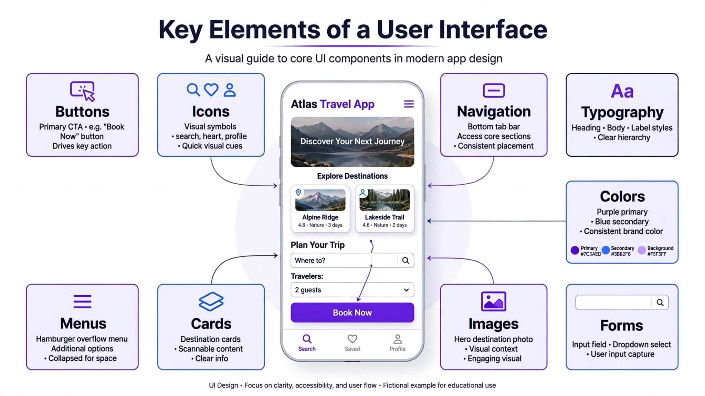
UX : stands for 'User Experience', which is the overall experience and satisfaction users derive from using a digital interface.
User Experience Design: it’s the process of creating a product that is easy to use, easy to interact with, and accessible for the users while putting their feelings first, based on a long-term and short-term scale.
User Interface Design: is the design of user interfaces for machines and software, such as computers, home appliances, mobile devices, and other electronic devices, with the focus on maximizing usability and the user experience.
UX/UI Goal
The goal of UX/UI is to develop or transform any product idea into delightful and exceptional user experiences in order to capture and retain users' attention in this fast-paced digital landscape by ensuring that every visual elements and every interaction must be purposeful and intuitive.
The differences between UX Design and UI Design
UX design considers the user’s entire journey to solve a particular problem.
What steps do they take?
What tasks do they need to complete?
How straightforward is the experience?
What kinds of problems and pain-points users come up against.
How a certain product might solve problems and pain-points.
UI design focuses on all the details that makes a user experience possible. UI design is not all about looks; UI design has a huge impact on whether or not a product is accessible and inclusive.
UI (User Interface):
Focuses on the look and feel of the product, primarily dealing with the visual elements such as buttons, icons, typography, color schemes, and layout.
Concerned with making the interface visually appealing, intuitive, and easy to navigate.
Aims to create a visually pleasing and cohesive design that enhances the overall usability of the product.
UI design is more about the surface-level elements that users interact with directly.
Elements: Buttons, icons, menus, typography, color schemes, layouts, forms, images, and other visual components.
Example: In a mobile app, the UI elements would include the placement of buttons for navigation, the style of icons representing different functions, the color scheme used for the interface, and the layout of the screens.
UX (User Experience):
Encompasses the overall experience a user has while interacting with a product, including their emotions, perceptions, and responses.
Involves understanding user behaviors, needs, and motivations to design products that are intuitive, efficient, and enjoyable to use.
Focuses on the entire user journey, from the initial interaction with the product to the final outcome, including all touchpoints and interactions.
UX design involves research, testing, and iteration to ensure that the product meets the users' needs and provides a positive experience.
Elements: User flows, information architecture, task flows, wireframes, prototypes, usability testing, and user research.
Example: When designing a website, UX considerations would involve determining the logical flow of information, organizing the navigation menu to make it intuitive for users to find what they're looking for, conducting usability testing to identify pain points in the user journey, and creating wireframes to visualize the structure of each page.
Summary:
| UX Design | UI Design |
|---|---|
| Focuses on the holistic experience of the user. | Focuses on the specific visual touchpoints of the user. |
| Centers on strategy, structure, and interaction design. | Centers on surface-level aspects of design, including visuals. |
| Involves studying the user's journey, and designing information architecture. | Involves designing the tangible elements of the experience, such as the choice of elements and how they interact. |
| Outputs include /personas user journey maps, wireframes, prototypes. | Outputs include mockups, high-fidelity layouts, and prototypes. |
| Incorporates a user's environment, mood, and context. | It is more tangible as users directly interact with the UI |
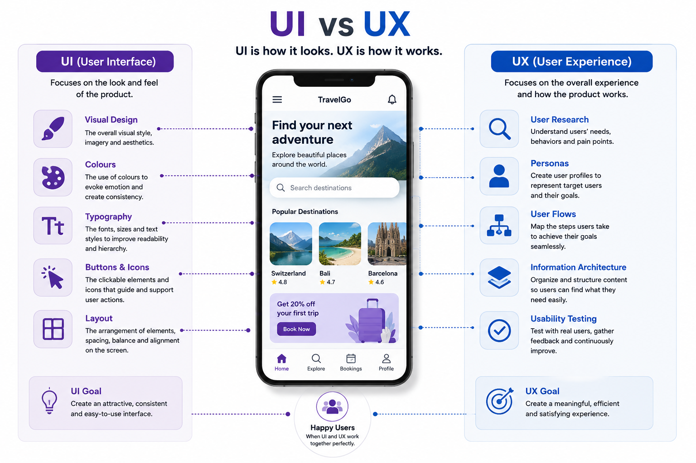
The Role and Importance of UI/UX
Role:
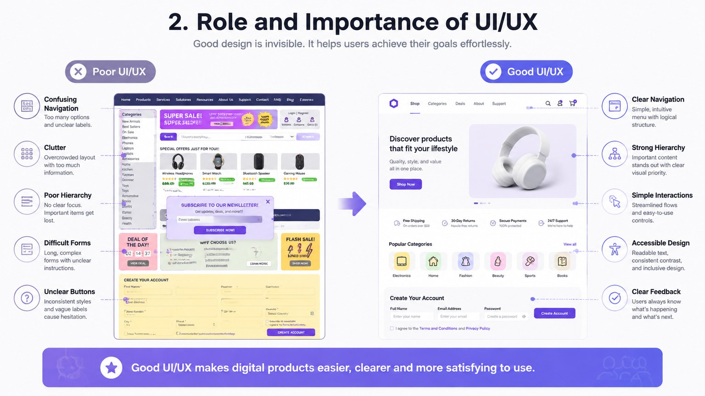
Facilitating Interaction: UI/UX design serves as the medium through which users interact with digital products or services. It encompasses the design of interfaces, navigation, and overall user experience.
Problem Solving: UI/UX designers identify user needs, pain points, and goals, then create solutions that address these effectively. They strive to make the user journey intuitive and seamless.
Enhancing Usability: UI/UX design focuses on making products easy to use and understand. This involves designing layouts, navigation, and interactions that minimize cognitive load and user effort.
Building Brand Identity: A well-designed UI/UX contributes to brand recognition and perception. Consistent visual elements, such as colors, typography, and icons, help reinforce brand identity and foster trust.
Improving Accessibility: UI/UX design considers diverse user needs, including those with disabilities. Designers prioritize accessibility features to ensure that products are usable by everyone, regardless of their abilities.
User Satisfaction: UI/UX design aims to ensure that users are satisfied with their interactions and experiences with the product. Satisfied users are more likely to engage with the product, recommend it to others, and become loyal customers.
Importance:
User Satisfaction: A positive user experience leads to higher user satisfaction and loyalty. Intuitive interfaces, clear navigation, and delightful interactions leave users with a favorable impression of the product or service.
Competitive Advantage: In today's crowded digital landscape, UI/UX design can be a key differentiator. Products that prioritize user needs and provide exceptional experiences have a competitive edge over those that don't.
Reduced Costs and Increased Revenue: Investing in UI/UX design upfront can save costs in the long run by reducing the need for extensive redesigns or addressing usability issues post-launch. Additionally, satisfied users are more likely to convert and become repeat customers, driving revenue.
Engagement and Retention: Well-designed UI/UX encourages user engagement and increases the likelihood of users returning to the product. Engaged users are more likely to explore additional features, share the product with others, and provide valuable feedback.
Market Adaptation and Innovation: UI/UX design is not static; it evolves with user preferences, technological advancements, and market trends. Companies that prioritize UI/UX remain adaptable and can quickly respond to changing user needs, staying ahead of the competition.
In summary, UI/UX plays a crucial role in shaping digital experiences, from facilitating interaction to driving user satisfaction and business success. Its importance lies in its ability to create products that are intuitive, accessible, and enjoyable to use, ultimately fostering engagement, loyalty, and growth.
Principles of effective UI/UX design
Effective UI/UX design is built on principles that prioritize the needs, behaviors, and preferences of users while aiming for simplicity, clarity, and engagement.
Here are some key principles:
User-Centered Design: Focus on understanding the needs, goals, and behaviors of your users through research, observation, and feedback. Design interfaces that are intuitive, efficient, and tailored to meet user needs.
Consistency: Maintain visual and functional consistency throughout the interface to reduce cognitive load and make interactions predictable. Use consistent design elements, such as colors, typography, icons, and terminology, across all screens and interactions.
Simplicity: Keep the interface simple and streamlined by eliminating unnecessary elements and minimizing complexity. Prioritize clarity and ease of use to ensure that users can accomplish tasks quickly and with minimal effort.
Visual Hierarchy: Use visual hierarchy to guide users' attention and communicate the relative importance of different elements within the interface. Arrange content and design elements in a way that leads users through the interface in a logical and intuitive manner.
Feedback and Affordance: Provide clear feedback to users in response to their actions, such as button clicks, form submissions, or errors. Use visual cues and affordances to indicate interactive elements and their functionality, helping users understand how to interact with the interface.
Accessibility: Design interfaces that are inclusive and accessible to users of all abilities. Consider factors such as color contrast, font size, keyboard navigation, screen reader compatibility, and alternative text for images to ensure that all users can access and interact with the interface effectively.
Usability: Prioritize usability by designing interfaces that are easy to learn, efficient to use, and error-tolerant. Conduct usability testing and gather feedback from real users to identify and address any usability issues or pain points in the interface.
Emotional Design: Consider the emotional impact of the interface on users and aim to create positive emotional experiences. Use elements such as color, imagery, tone of voice, and micro-interactions to evoke emotions and build a connection with users.
Context Awareness: Design interfaces that are aware of the user's context, environment, and tasks to provide relevant and personalized experiences. Adapt the interface based on factors such as device type, location, user preferences, and previous interactions.
Continuous Improvement: Continuously iterate and improve the UI/UX design based on user feedback, data analytics, and evolving business requirements. Stay informed about industry trends, best practices, and emerging technologies to keep the interface relevant and competitive.
By adhering to these principles, designers can create UI/UX designs that are user-friendly, intuitive, and engaging, ultimately leading to more satisfying and successful user experiences.
Understanding the user-centered design approach and its benefits.
The user-centered design (UCD) approach is a design methodology that prioritizes the needs, preferences, and behaviors of users throughout the design process. It involves understanding the context in which users will interact with a product or service, involving users in the design process through research and feedback, and iteratively testing and refining designs to ensure they meet user needs effectively. Here's a closer look at the user-centered design approach and its benefits:
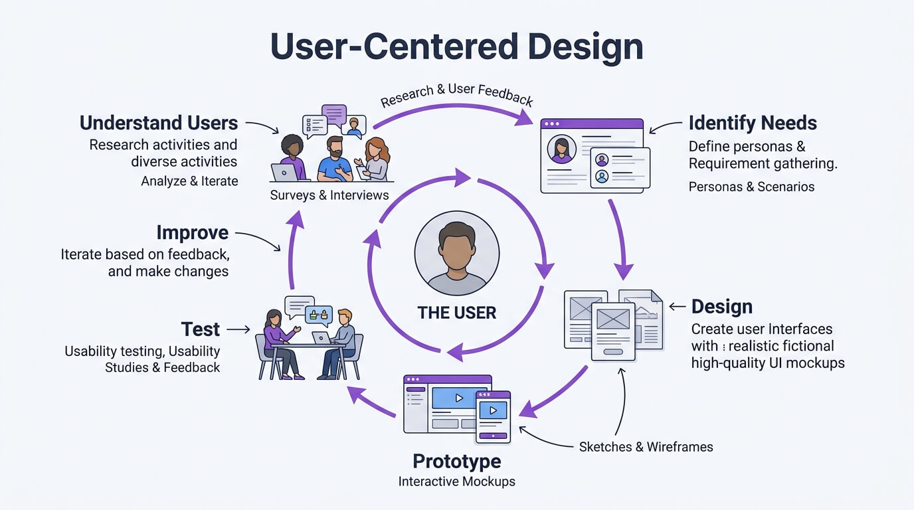
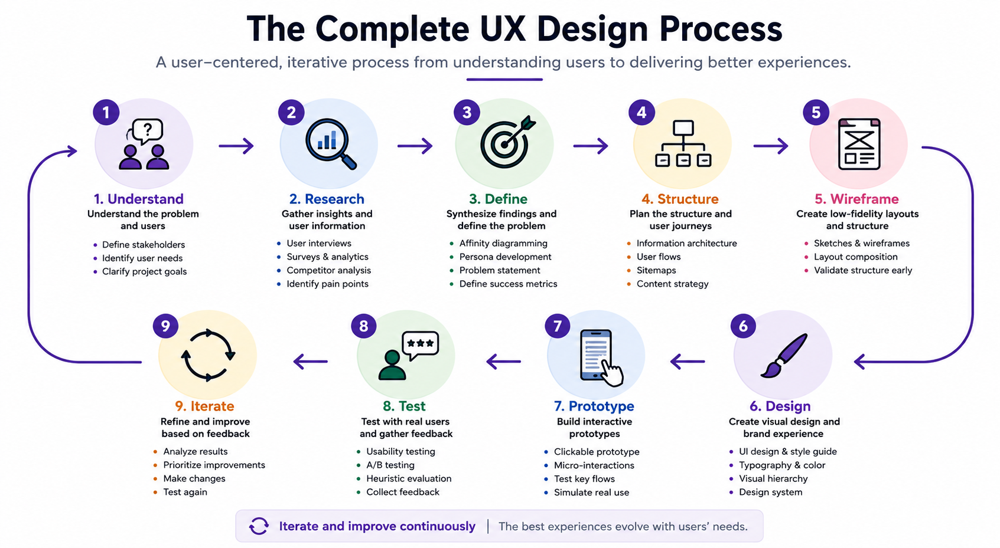
Understanding User-Centered Design Approach:
User Research: User-centered design begins with comprehensive research to understand the target audience's needs, goals, behaviors, and pain points. This often involves techniques such as interviews, surveys, observations, and usability testing to gather insights directly from users.
User Personas: Based on the research findings, designers create user personas, which are fictional representations of typical users. Personas help designers empathize with users and make informed design decisions that align with user needs and goals.
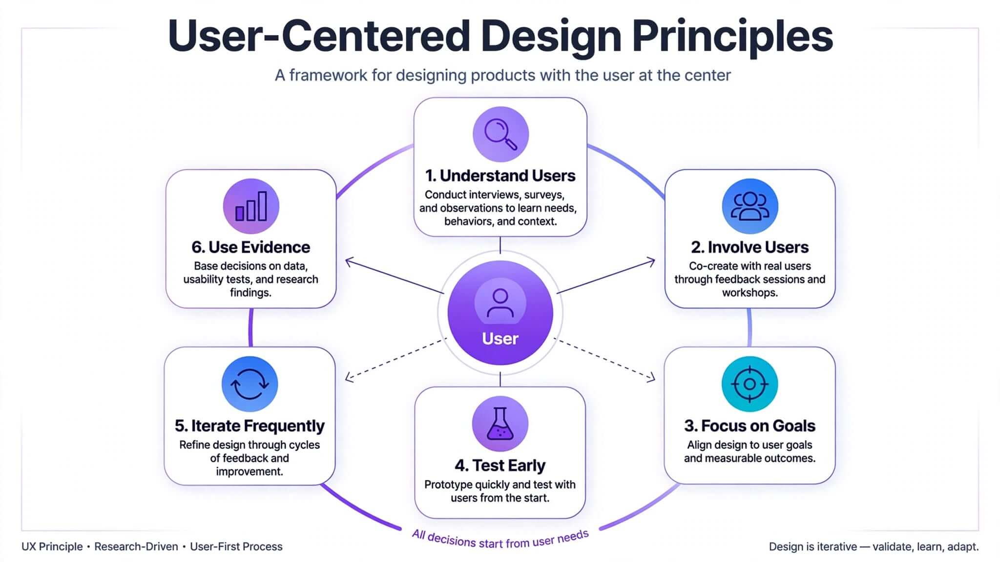
Iterative Design Process: Designers create prototypes and design concepts based on user research and iterate on them through feedback and testing. This iterative approach allows designers to refine the design iteratively, incorporating user feedback and insights at each stage of the design process.
Usability Testing: Usability testing involves observing users as they interact with prototypes or mockups to identify usability issues, pain points, and areas for improvement. Testing helps validate design decisions, uncover usability problems, and ensure that the final product meets user needs effectively.
Accessibility and Inclusivity: User-centered design emphasizes accessibility and inclusivity, ensuring that products and services are usable by people of all abilities. Designers consider factors such as color contrast, readability, keyboard navigation, and screen reader compatibility to create inclusive experiences for all users.
Continuous Improvement: User-centered design is an ongoing process that continues even after the product is launched. Designers collect user feedback, analyze metrics, and iterate on the design to address emerging needs, optimize the user experience, and stay competitive in the market.
Benefits of User-Centered Design:
Improved User Satisfaction: By focusing on user needs and preferences, user-centered design results in products and services that are more intuitive, efficient, and enjoyable to use, leading to higher user satisfaction and loyalty.
Reduced Development Costs: By involving users early in the design process and iterating on designs based on user feedback, user-centered design helps identify and address usability issues and requirements before they become costly to fix during development or after launch.
Higher Adoption Rates: User-centered design leads to products and services that are tailored to meet user needs effectively, increasing adoption rates and reducing the likelihood of user abandonment or dissatisfaction.
Increased Usability and Accessibility: User-centered design prioritizes usability and accessibility, resulting in products and services that are easier to use and accessible to people of all abilities, thereby widening the potential user base and improving overall user experience.
Competitive Advantage: By delivering superior user experiences that are aligned with user needs and preferences, user-centered design helps organizations differentiate themselves from competitors, build brand loyalty, and gain a competitive edge in the market.
Overall, user-centered design is a holistic approach that puts users at the center of the design process, resulting in products and services that are more effective, efficient, and satisfying for users, while also delivering business value for organizations.
Feedback and Responsiveness in UI/UX:
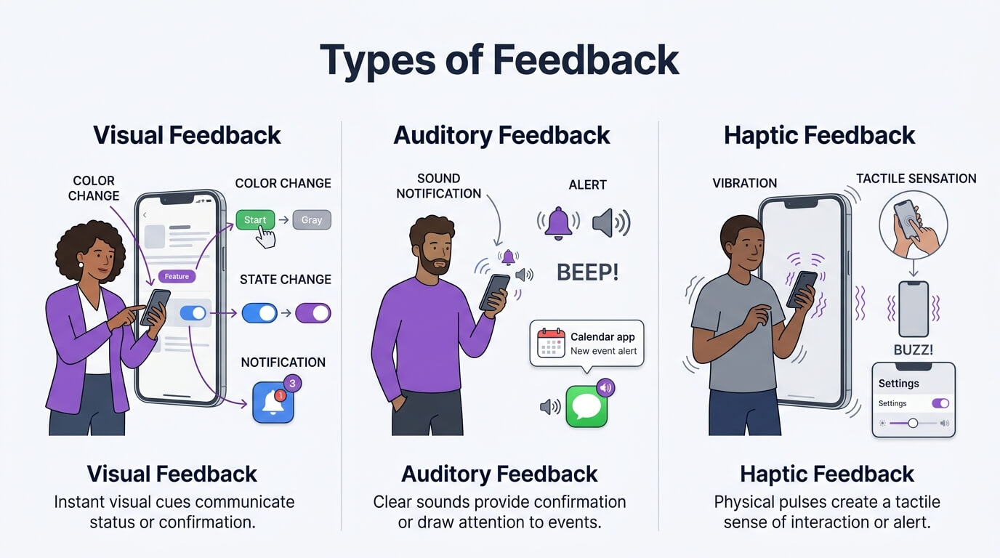
Feedback
In UX/UI design, feedback refers to the information, cues, or responses provided to users as a result of their interactions with a digital product or interface. Feedback plays a crucial role in guiding users, informing them about the outcome of their actions, and helping them understand how to proceed effectively. Here's a deeper look at what feedback means in UX/UI:
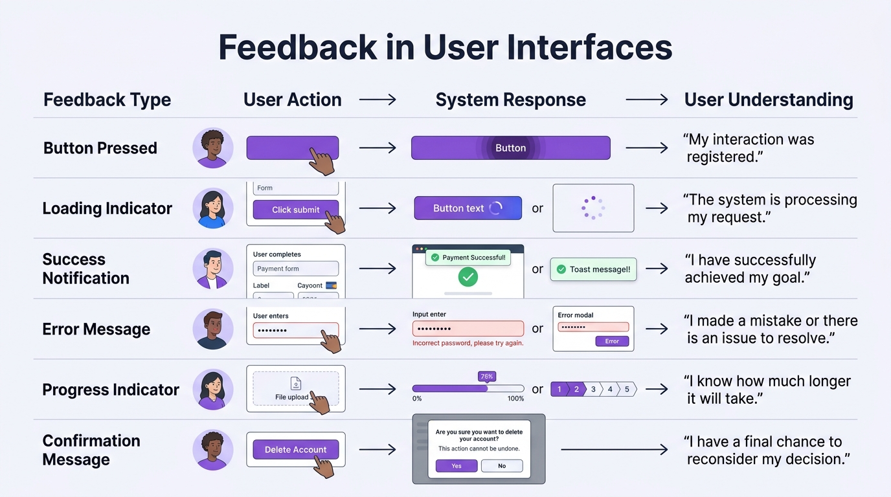
Confirmation: Feedback confirms to users that their actions have been successfully completed. For example, when a user submits a form or completes a transaction, they should receive a confirmation message indicating that the action was successful.
Error Handling: Feedback informs users when errors occur during their interactions with the interface. Error messages should be clear, concise, and provide guidance on how to resolve the issue. Effective error handling helps prevent user frustration and guides users towards successful completion of tasks.
Progress Indication: Feedback provides users with visibility into their progress when performing lengthy or multi-step tasks. Progress indicators, such as progress bars or step counters, inform users about the current stage of the process and how much more is left to complete.
Visual Cues: Feedback includes visual cues that highlight interactive elements and indicate their states. For example, buttons may change color or appearance when hovered over or clicked, providing users with immediate feedback about their interactions.
Validation: Feedback validates user inputs in forms or fields, confirming whether the provided information is valid or requires correction. Real-time validation can help users correct errors as they occur, reducing the likelihood of submission errors.
Contextual Guidance: Feedback offers contextual guidance to users, providing hints, tips, or suggestions to help them navigate the interface more effectively. Contextual guidance can include tooltips, help icons, or inline instructions that clarify complex or unfamiliar features.
User Engagement: Feedback encourages user engagement by acknowledging user actions and interactions. Interactive elements, such as buttons, sliders, or toggles, should respond immediately to user input, providing users with a sense of control and agency.
Accessibility Considerations: Feedback in UX/UI design should also consider accessibility needs, ensuring that users with disabilities can effectively perceive and interpret feedback cues. This may involve providing alternative feedback modalities, such as auditory or tactile feedback, for users who cannot rely solely on visual cues.
In summary, feedback in UX/UI design encompasses a wide range of cues, responses, and notifications that inform and guide users during their interactions with digital products or interfaces. Effective feedback enhances user experience, improves usability, and fosters user engagement and satisfaction.
Responsiveness
Responsiveness in the context of UX/UI design refers to the ability of a digital interface or product to adapt and react swiftly to user actions and changes in the environment. Here's a breakdown of what responsiveness entails:
Adaptability: A responsive UI/UX design ensures that the interface can adjust seamlessly across various devices, screen sizes, and orientations. Whether users are accessing the product on a desktop computer, tablet, or smartphone, the interface should adapt to provide an optimal viewing and interaction experience.
Performance: Responsiveness also encompasses the speed and efficiency of the interface. Users expect instant feedback when they interact with elements such as buttons, menus, or forms. A responsive design minimizes loading times and latency, ensuring that interactions feel smooth and fluid.
Visual Feedback: Responsive UI/UX designs provide visual cues and feedback to indicate the status of user actions. For example, interactive elements may change appearance (e.g., color, size, or animation) to indicate when they are being hovered over or clicked. Feedback should be immediate and intuitive, helping users understand the outcome of their interactions.
User-Centric Interactions: Responsiveness involves designing interactions that prioritize the user's needs and expectations. Interfaces should anticipate user actions and respond in a way that feels natural and predictable. For example, predictive search suggestions or auto-fill forms can streamline the user's journey and enhance responsiveness.
Accessibility: Responsive UI/UX design also considers accessibility needs, ensuring that all users, including those with disabilities, can effectively interact with the product. This may involve providing alternative input methods, optimizing for screen readers, and adhering to accessibility standards such as WCAG (Web Content Accessibility Guidelines).
Continuous Improvement: Responsiveness is not a one-time effort but an ongoing process of optimization. UI/UX designers continuously monitor user feedback, performance metrics, and technological advancements to identify areas for improvement and ensure that the interface remains responsive to evolving user needs and expectations.
In summary, responsiveness in UX/UI design encompasses adaptability, performance, visual feedback, user-centric interactions, accessibility, and continuous improvement. A responsive interface enhances user satisfaction, engagement, and usability by providing a seamless and intuitive experience across different devices and contexts.
In summary, feedback and responsiveness are essential aspects of UI/UX design that focus on providing users with timely guidance, adapting to their actions and devices, and optimizing performance to enhance engagement and satisfaction.
Feedback Mechanisms: UI/UX design incorporates various feedback mechanisms to provide users with real-time guidance and information about their interactions with the product. Feedback can be visual (e.g., error messages, confirmation dialogs), auditory (e.g., notification sounds), or haptic (e.g., vibration feedback on touchscreens).
User-Centric Feedback: Feedback messages should be clear, concise, and tailored to the user's context and actions. They should inform users of the outcome of their actions, guide them towards achieving their goals, and help them recover from errors or setbacks.
Iterative Improvement: UI/UX designers continuously gather feedback from users through usability testing, user interviews, surveys, and analytics. This feedback informs iterative design improvements, allowing the product to evolve and adapt to changing user needs and preferences over time.
Responsive Design: UI/UX design prioritizes responsiveness across different devices and screen sizes to ensure a consistent and seamless user experience. Responsive design techniques, such as fluid grids, flexible images, and media queries, enable content to adapt dynamically to the user's device and viewport.
Performance Optimization: Responsiveness also encompasses optimizing the performance of the product to ensure fast loading times, smooth animations, and fluid interactions. UI/UX designers collaborate with developers to implement efficient coding practices and minimize latency, resulting in a snappy and responsive user interface.
User Engagement: Responsive feedback mechanisms and fast response times contribute to user engagement and satisfaction. Users feel more in control and confident when interacting with a responsive interface, leading to increased usage, retention, and positive word-of-mouth recommendations.
Accessibility Considerations: Feedback and responsiveness should be designed with accessibility in mind to accommodate users with disabilities. Providing alternative feedback modalities, such as screen reader compatibility and keyboard navigation support, ensures that all users can effectively interact with the product.
Continuous Monitoring and Optimization: UI/UX designers employ tools and techniques for monitoring user feedback and system performance post-launch. Continuous monitoring allows them to identify issues, gather insights, and make data-driven decisions to further optimize the user experience.
Key Terms
| Term | Simple meaning |
|---|---|
| UI | What the user sees and interacts with |
| UX | The overall experience of using a product |
| Usability | How easily users can accomplish tasks |
| User-centred design | Designing around real user needs and testing, not assumptions |
| Feedback (interface) | A signal a system gives to confirm an action happened |
| Responsiveness (interface) | How quickly and clearly a system reacts to user input |
Good vs bad interface
The same mobile app shown twice — a cluttered, confusing version next to a clean version with obvious hierarchy and a clear call to action.
16:9 · side-by-side mobile screensMistake: UI and UX mean the same thing.
Correct: UI is the interface itself; UX is the entire experience of using the product, including how it feels and functions.
Mistake: A good-looking interface automatically means good UX.
Correct: An interface can look attractive and still be confusing or slow to use.
When asked to “differentiate UI and UX,” give one clear one-line definition of each, then back it up with 2–3 concrete examples per side — markers usually award points per example, not just the definition.
- Pick any app on your phone.
- List 5 UI elements you notice (colours, buttons, icons, layout, typography).
- List 5 UX aspects behind those elements (how they help you complete a task).
- Identify one thing that looks good but works badly, or vice versa.
- Write two sentences on what you'd improve and why.
Qualitative vs quantitative research, attitudinal vs behavioral research, user personas.
Why research has to happen before design decisions are made, not after.
Run interviews, surveys and simple analytics reviews; build a persona from patterns you find.
What users say is not necessarily what users do — combine attitudinal and behavioral methods.
DAD 6208.2 UI/UX
User Research and Analysis
User research.
User research is the systematic study of target users of a product or interface to understand their behaviors, needs, and motivations. User research can happen at every stage of the design process to inform decisions.
It’s important to combine multiple research methods for a full understanding of user behavior.
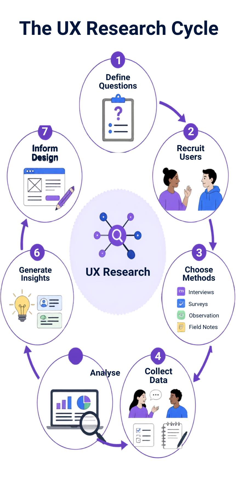
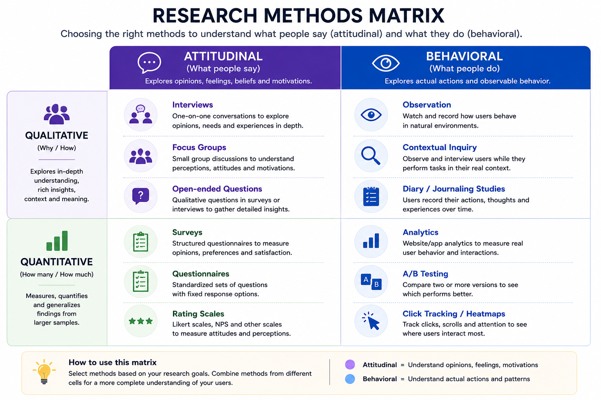
Research Methods
Quantitative methods
Quantitative research methods are those that collect numerically measurable data. These methods allow UX professionals to discover broad patterns, compare different designs and their trade-offs, and tie their work back to company goals and key performance indicators (KPIs).
Quantitative methods can be used at any stage of the design process, but are often used at the beginning and end of the design process, first to gain an understanding of the market or ecosystem, and later to evaluate the performance of a product or design.
Quantitative attitudinal data may include self-reported data from surveys and card sorting, while quantitative behavioral data focuses on assessing behavior from methods such as web analytics, A/B testing, tree testing, and eye tracking studies.
Qualitative Methods
Qualitative research methods examine why users behave the way they do in depth, and focus on the motivations and thought processes behind their experience.
While they can be used at any stage of the design process, qualitative methods may provide especially useful insights during the exploratory discovery and ideation stages, when teams are trying to get to know target users in-depth.
Qualitative attitudinal data may include thoughts, beliefs, and self-reported needs from interviews, focus groups, and diary studies, while qualitative behavioral data focuses on behaviors from methods such as contextual inquiry and ethnography.
Attitudinal research
Attitudinal research methods focus on self-reported thoughts, beliefs, and needs from users (i.e. what users say, rather than what they do). Attitudinal research methods can be either quantitative or qualitative, and include interviews, focus groups, diary studies, and surveys.
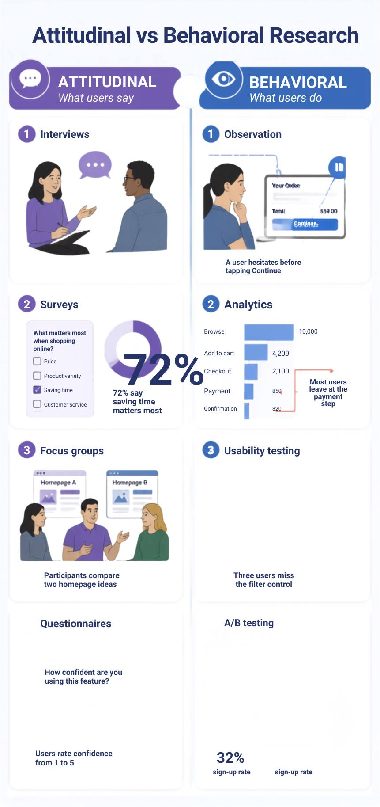
Behavioral Research
Behavioral research methods observe user behavior through techniques such as ethnographic studies, A/B testing, tree testing, and user testing.
Anthropologist Margaret Mead once said, “What people say, what people do, and what people say they do are entirely different things.” User researchers need to develop strong interpretive and creative skills to get to the core of why people behave the way they do. It’s important to combine behavioral research with attitudinal research for a full understanding of user behavior.
While generative user research, such as interviews and surveys, is done as part of the discovery process to get to know users better, evaluation methods like user testing and A/B testing assess how a design or prototype performs once it’s complete. Research can happen either in-person or remotely — remote UX research can help increase inclusivity, free up monetary resources that would be spent on travel, and increase convenience for research participants (source: Nielsen Norman Group).
Research plan
A research plan is a deliverable that outlines the goals, methods, and key details of a research study. Writing a research plan is generally the first step of conducting user research. Documenting this plan helps teams align on essential details and define a strategic framework.
A research plan should cover:
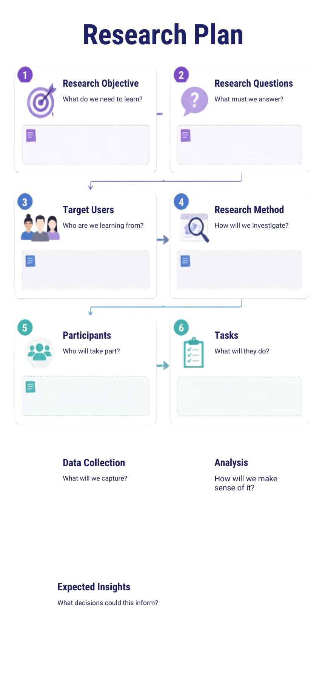
Background: Why is the team embarking on this research?
Research goal: What does the team hope to learn from this research?
Research question(s): What question(s) should the team explore to achieve their research goal?
Research method(s) and protocols: What research method or methods will be used? How will these methods be executed?
Target participants: Who will be included as participants in the research? The “who” considers factors like demographic information and other relevant details, such as existing customers vs. potential customers. In many cases, a participant screener, will be needed in order to qualify participants.
Recruitment strategies: How will participants be recruited? Where will the team find participants? Will compensation or incentives be offered to those who participate?
Timeline and due dates: How long will each stage of the research take? When does the project need to be completed?
Ethical considerations: How will participants be protected? What can the team realistically promise? While participant privacy and informed consent should always be considered, these should be emphasized for studies that cover sensitive topics.
Research materials to be created: What research, recruitment, and reporting collateral needs to be created? This includes any informed consent forms, explanatory materials, interview scripts, participant screeners, survey questions, or anything else that should be created in advance.
Example of a plan https://miro.com/app/board/uXjVPeic5uo=/?embedAutoplay=true%3Futm_source%3Dcodecademy
Gathering and analysing data.
Gathering Data
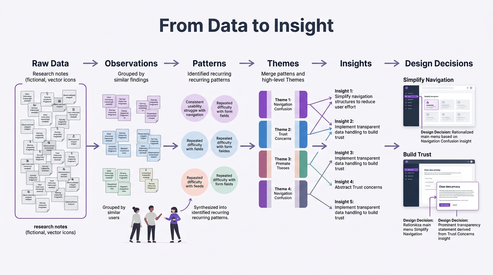
User Interviews:
Purpose: To gain in-depth insights into user behaviors, needs, and pain points.
Method: Conduct one-on-one sessions with users where open-ended questions are asked.
Outcome: Qualitative data that provides detailed user stories and context.
Surveys and Questionnaires:
Purpose: To collect data from a larger sample size efficiently.
Method: Distribute structured questions with predefined options (multiple choice, Likert scales, etc.) or open-ended questions.
Outcome: Both quantitative (numerical) and qualitative data that highlight user preferences and general trends.
Usability Testing:
Purpose: To observe how users interact with a product and identify usability issues.
Method: Have users perform tasks using the product while being observed and recorded.
Outcome: Direct feedback on usability issues and user satisfaction levels.
Analytics Tools:
Purpose: To track and measure user interactions with the product.
Method: Use tools like Google Analytics, Hotjar, or Mixpanel to collect data on user behavior.
Outcome: Quantitative data such as page views, click-through rates, session durations, and conversion rates.
Focus Groups:
Purpose: To gather diverse perspectives and attitudes about the product.
Method: Conduct group discussions moderated by a researcher.
Outcome: Qualitative data with a range of opinions and ideas.
A/B Testing:
Purpose: To compare two versions of a design to see which performs better.
Method: Present different versions of a webpage or app to different user groups and measure performance metrics.
Outcome: Quantitative data that helps in making data-driven design decisions.
Analyzing Data
Qualitative Analysis:
Thematic Analysis: Identify common themes and patterns in qualitative data (e.g., interview transcripts, open-ended survey responses). Thematic analysis is a method for analyzing qualitative data that involves reading through a set of data and looking for patterns in the meaning of the data to find themes.
Affinity Diagrams: Organize ideas and findings into groups based on their natural relationships. (sometimes known as an affinity map or affinity chart) is a visual tool that helps you organize information from a brainstorming session. sometimes called the K-J method after Kawakita.
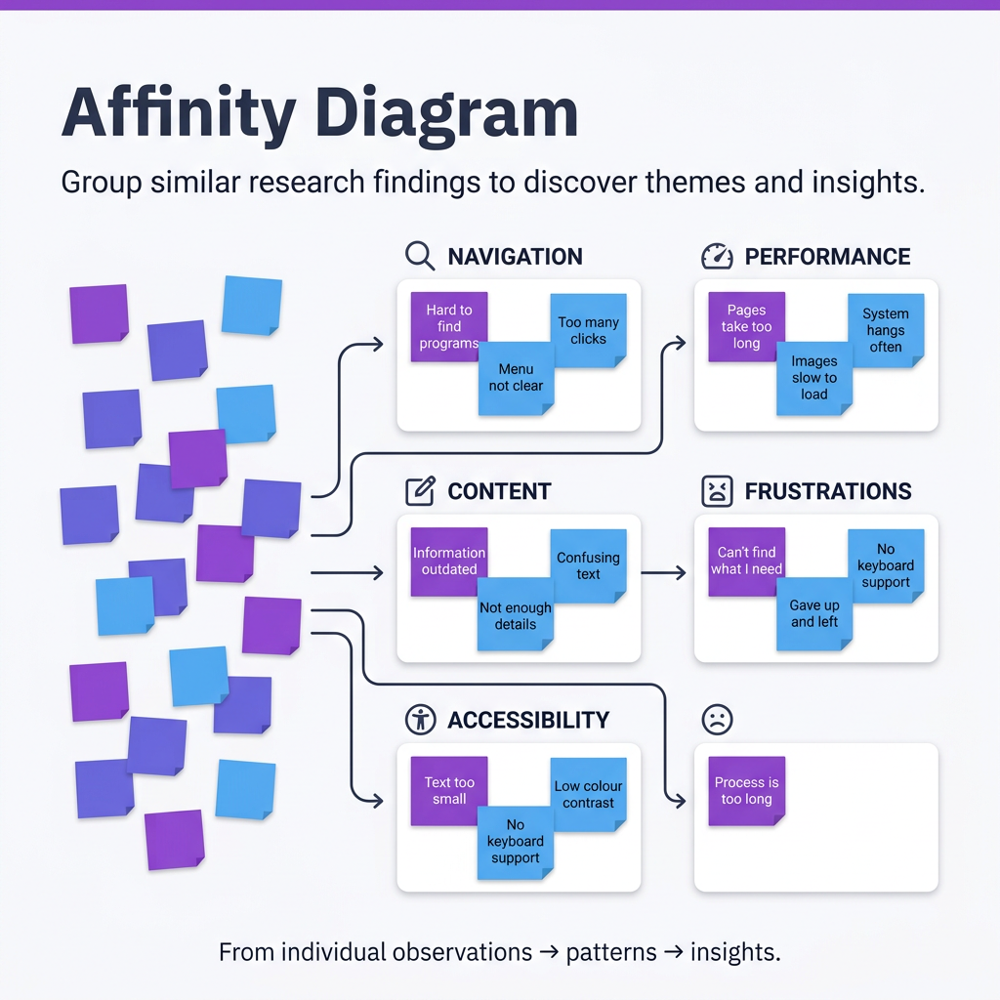
Figure: Affinity Diagram Persona Development: Create detailed profiles of typical users based on qualitative data.
Quantitative Analysis:
Descriptive Statistics: Use metrics such as mean, median, mode, and standard deviation to summarize data.
Inferential Statistics: Apply statistical tests (e.g., t-tests, chi-square tests) to make inferences about the user population from sample data. Inferential stats allow you to assess whether patterns in your sample are likely to be present in your population; Some common inferential statistical tests include t-tests, ANOVA, chi-square, correlation and regression.; Inferential statistics alone do not prove causation. To identify and measure causal relationships, you need a very specific research design.
Data Visualization: Create charts, graphs, and heatmaps to visualize patterns and trends in the data.
Usability Analysis:
Task Success Rate: Measure the percentage of successfully completed tasks during usability testing.
Error Rate: Track the frequency and types of errors users make.
Time on Task: Measure how long it takes users to complete tasks.
Behavioral Analysis:
User Flow Analysis: Map out the paths users take through the product to identify common pathways and drop-off points.
Cohort Analysis: Group users by shared characteristics to analyze their behavior over time.
Sentiment Analysis:
Purpose: To gauge user attitudes and feelings towards the product.
Method: Analyze qualitative data for positive, negative, and neutral sentiments using tools or manual coding.
Integrating Findings
Synthesis:
Combine insights from qualitative and quantitative data to create a holistic view of the user experience.
Identify key pain points, unmet needs, and opportunities for improvement.
Actionable Insights:
Translate data insights into design recommendations and feature priorities.
Develop a roadmap for design and development based on user feedback and data.
Communication:
Present findings to stakeholders through detailed reports, presentations, and visualizations.
Ensure that the insights are accessible and understandable to all team members involved in the product development process.
Conclusion
Effective gathering and analysis of data in UX/UI research provide a strong foundation for creating user-centered designs. By employing a mix of qualitative and quantitative methods, researchers can develop a comprehensive understanding of user needs and behaviors, leading to more effective and satisfying user experiences.
User-Centric Design
User-centered design (UCD) puts users at the center of product development and involves them in the design from the beginning.
Design here is seen as iterative process (The iterative process refers to the creative exercise of producing different versions or variations of a possible solution) that incorporates user feedback both during the development process and after launch.
User-centered design responds to both contexts of use (such as the user’s environment, technology, and emotional state) and business goals.
User-centered design processes generally involve the following activities:
Understand: Empathize with the user.
Specify: Hone in on a specific problem to solve.
Design: Brainstorm and develop solutions.
Evaluate: Test the product or prototypes to assess success and incorporate feedback.
Empathy helps define problems
Testing/Evaluation helps learn about users, create new ideas and reveal insights that redefine the problem
Prototype/design sparks new ideas
Quiz:
What does it mean that user-centered design is an “iterative”
process?
User Personas
In user experience and user interface design, a persona is a fictional character that represents a typical user of an app, website, or other product, so that designers can clarify their target user and empathize with them.
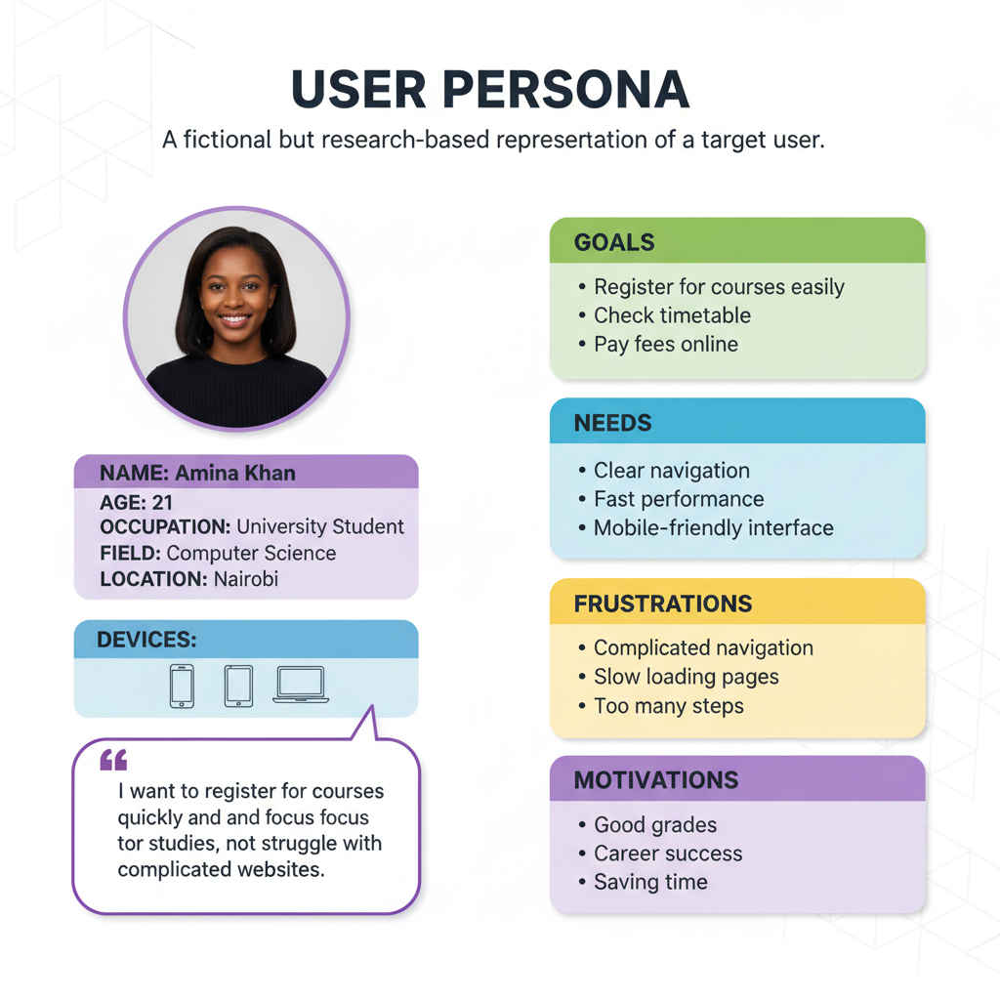
How to build a user persona
Step 1: Give the persona a name (also referred as a Header)
Give the character a first name and combine it with their function. This makes the persona memorable.
Example: a shop website can have John the Client and Mike the accountant as personas. A Pet website can have Pat the Pet Groomer.
Use a unique photo/drawing that identify the persona. This will help in remembering the persona going forward.
Step 2: Add demographics and interests (demographic Profile)
Here you give the personal data:
Age
Gender
Marital status
Occupation
Location
Have a summary of the character’s personality. You can condense it into a quote that represents attitudes and feelings.
Step 3: Identify frustrations (End Goals)
Identify and record the user problems the product solves (goals of the product)
Step 4: Identify wants and aspirations (add scenario)
This will help in identifying the experience the user expects from the product.
A scenario is a “day-in-the-life” narrative that describes how a persona would interact with your product in a particular context to achieve his or her end goal(s). The scenario usually defines when, where, and how the narrative takes place. They are typically written from the perspective of the persona and describe use cases that may happen in the future.
For example, a user “X” in a tours and travel website scenario could start off like this:
“At least once a year, I like to go away on a luxury holiday. I try to discover places I’ve never been to before and to stick to destinations that aren’t yet overrun with tourists. I work full time, so I don’t have that much time to browse and book each individual element of my holiday. Ideally, I’ll find some kind of package deal that comes with local restaurant recommendations…”
Step 5: Review and update frequently
Refine persona during the user testing phase of the project. After the product launch, user feedback will help you keep the persona up to date.
UX persona example #1: university website
Both the mobile and desktop versions of the site give students access to class schedules, course syllabi, student events, sporting events, fraternity and sorority mixers, and more.
Persona name: Freddie the Freshman
Age: 18
Gender: Male
Marital status: Single
Children: None
Occupation: Student
Education: High school diploma
Income: Allowance from his parents of $500/month on prepaid debit card
Location: Austin, TX
Quote: “Enjoy life while you’re young.”
Influencers: Professors, fraternity brothers
Sources of info: TV, the university newspaper, blogs
Goals: To be well-liked by his peers
Values: Good grades are important, but it’s also important to have a good time
Frustrations: He has to choose which college activities are going to let him keep up with his studies
Aspirations: To get the most out of the college experience
Understanding user psychology and behaviour
Understanding and application of psychological principles and insights into how users think, feel, and behave when interacting with digital products helps designers create interfaces that are intuitive, engaging, and satisfying for users.
Why It’s Important:
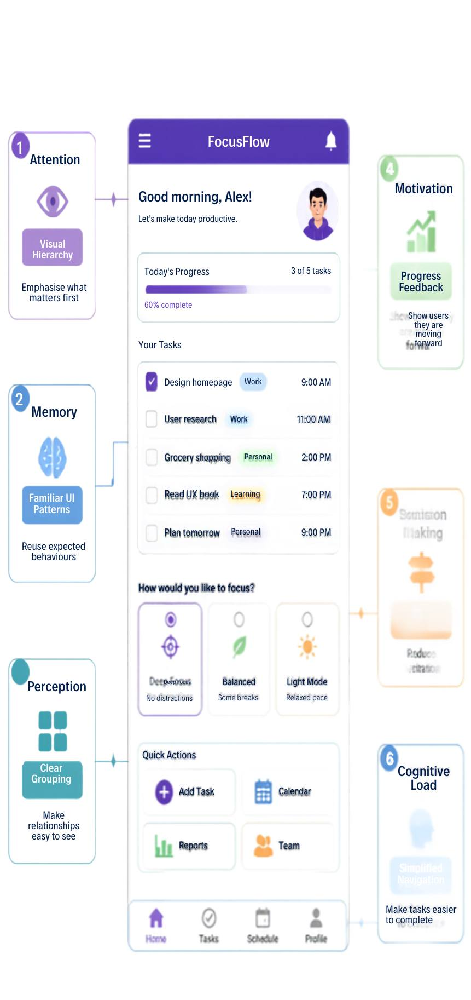
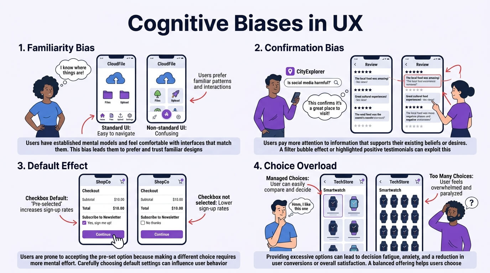
Enhances Usability: By understanding how users perceive and process information, designers can create interfaces that are easier to navigate and use.
Increases Engagement: Insights into what motivates and attracts users can help in designing features that keep them engaged.
Improves User Satisfaction: A user-centric design approach that considers users’ needs and preferences can lead to higher satisfaction and loyalty.
Reduces Errors: Knowledge of common user errors and frustrations allows designers to anticipate and mitigate these issues, leading to a smoother user experience.
Key Aspects of User Psychology and Behavior:
Cognitive Load:
Definition: The amount of mental effort required to use the interface.
Application Example: Simplify navigation and minimize the number of actions needed to complete tasks. Spacing and grouping unique content on a layout to help the user quickly identify context of contents.
Mental Models:
Definition: Users’ preconceived notions of how systems should work based on their previous experiences.
Application Example: Align interface design with common user expectations to make the system intuitive.
Perception and Attention:
Definition: How users perceive visual elements and where they focus their attention.
Application Example: Use visual hierarchy, contrast, and spacing to guide users’ attention to important elements.
Motivation and Emotion:
Definition: Factors that drive user actions and emotional responses to the interface.
Application Example: Design for positive emotional experiences and leverage motivational triggers like rewards and feedback.
Behavioral Patterns:
Definition: Repeated actions or habits that users develop when interacting with interfaces.
Application Example: Design with familiar patterns to create a sense of ease and predictability.
Heuristics and Biases:
Definition: Cognitive shortcuts and biases that influence decision-making. (heuristic methods include trial and error, historical data analysis, guesswork, and the process of elimination)
Cognitive bias is a systematic thought process caused by the tendency of the human brain to simplify information processing through a filter of personal experience and preferences. The filtering process is a coping mechanism that enables the brain to prioritize and process large amounts of information quickly. While the mechanism is effective, its limitations can cause errors in thought.Application Example: Be aware of biases like the “default effect” or “confirmation bias” to design more user-friendly choices.
Confirmation bias: The tendency for the brain to value new information that supports existing ideas.
The Dunning-Kruger effect: The tendency for an individual with limited knowledge or competence in a given field to overestimate their own skills in that field.False consensus effect: The tendency for an individual to overestimate how much other people agree with them.
(Task – Identify 20 Types of cognitive bias)
Feedback and Affordances:
Definition: Cues that indicate how to interact with elements and feedback on actions taken.
Application Eample: Provide clear and immediate feedback to users to confirm actions and guide them through tasks.
Techniques for Understanding User Psychology and Behavior:
User Research:
Conduct interviews, surveys, and usability tests to gather insights into user needs, preferences, and pain points.
Personas and Empathy Maps:
Create detailed personas and empathy maps to understand different user types and their emotional states.
Journey Mapping:
Map out user journeys to identify touchpoints, challenges, and opportunities for improvement.
A/B Testing:
Use A/B testing to compare different design variations and understand user preferences and behaviors.
Analytics and Data:
Analyze user data and behavior patterns to make informed design decisions.
By integrating these principles and techniques into the design process, UI/UX designers can create more effective and user-centered digital experiences.
Conducting user research and creating user personas
Conducting user research and creating user personas are foundational steps in the UI/UX design process. These activities help designers gain a deep understanding of their users, ensuring that the final product meets user needs and preferences effectively. Here's an overview of each process:
Conducting User Research
User research involves collecting data about your users' needs, behaviors, motivations, and pain points. This data guides the design process and helps ensure that the product is user-centric. Here are the steps involved:
Define Objectives:
Clearly outline what you aim to learn from the research. Objectives might include understanding user behavior, identifying pain points, or discovering user needs and preferences.
Choose Research Methods:
Qualitative Methods:
Interviews: Conduct one-on-one interviews to gather in-depth insights into users' thoughts and experiences.
Focus Groups: Facilitate group discussions to explore user attitudes and perceptions.
Ethnographic Studies: Observe users in their natural environment to understand their behavior and context.
Quantitative Methods:
Surveys: Distribute questionnaires to gather data from a large number of users.
Analytics: Use website or app analytics to track user behavior and identify patterns.
Recruit Participants:
Identify and recruit a representative sample of your target audience. Ensure diversity to capture a broad range of insights.
Collect Data:
Conduct the chosen research activities, ensuring to record or transcribe qualitative data accurately.
Analyze Data:
Synthesize the data to identify common themes, patterns, and insights. Use tools like affinity diagrams or thematic analysis for qualitative data and statistical analysis for quantitative data.
Creating User Personas
User personas are fictional, generalized representations of your target users based on the data gathered from user research. They help designers empathize with users and make informed design decisions. Here’s how to create user personas:
Identify Key Findings:
Review the user research data to identify distinct user groups that have unique needs, behaviors, and goals.
Define Persona Attributes:
Create a set of attributes that describe each user group. These typically include:
Demographics: Age, gender, occupation, education, etc.
Psychographics: Interests, values, attitudes, etc.
Behavioral Patterns: Online behavior, tech savviness, preferred devices, etc.
Goals: What they aim to achieve using your product.
Pain Points: Challenges and frustrations they face.
Create Persona Profiles:
Develop detailed profiles for each persona. Include:
Name and Photo: Humanize the persona with a realistic name and photo.
Background: Briefly describe their background and context.
Personality Traits: Outline key personality traits relevant to their interaction with the product.
Scenarios: Describe typical scenarios or tasks they would undertake using your product.
Quotes: Include direct quotes from user research to capture the persona's voice and perspective.
Use Personas in Design Process:
Integrate personas into every stage of the design process. Refer to them when making design decisions to ensure the product aligns with users' needs and behaviors.
Benefits of User Research and Personas
Empathy: Helps designers and stakeholders empathize with users, understanding their perspectives and experiences.
Focus: Provides a clear focus on who the users are and what they need, guiding design decisions and prioritizations.
Alignment: Ensures that the entire team is aligned on the target audience, fostering a user-centric design culture.
Efficiency: Saves time and resources by preventing assumptions and focusing on validated user needs.
By conducting thorough user research and creating detailed personas, UI/UX designers can ensure that their designs are user-centered, addressing real user needs and enhancing overall user satisfaction.
Defining user goals and task flows
Defining user goals and task flows is a crucial part of the UI/UX design process, ensuring that the product not only meets user needs but also provides a seamless and efficient user experience. Here’s a detailed look at how to define user goals and task flows:
Defining User Goals
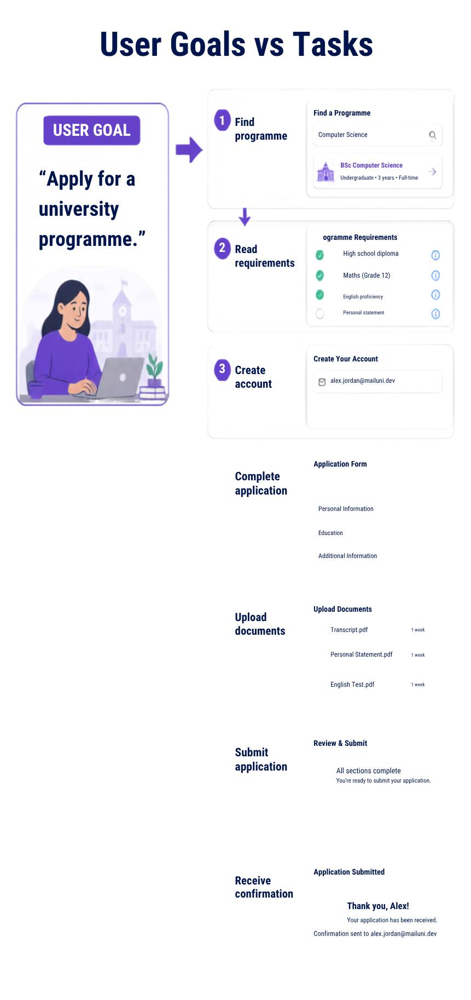
User goals are the specific objectives or outcomes that users aim to achieve when interacting with a product. Understanding these goals helps designers create features and interfaces that support users in achieving them efficiently.
Steps to Define User Goals:
Conduct User Research:
Use methods such as interviews, surveys, and usability tests to gather insights into what users want to accomplish with your product.
Identify Common Objectives:
Analyze the research data to identify common goals among users. These could be high-level goals (e.g., "find a product quickly") or specific tasks (e.g., "complete a purchase").
Prioritize Goals:
Not all goals will have the same level of importance. Prioritize them based on factors such as frequency, user feedback, and business objectives.
Document User Goals:
Create a clear and concise list of user goals. Each goal should be actionable and specific, providing a clear direction for the design process.
Example of User Goals:
For an e-commerce website:
Browse Products: Users want to explore different products easily.
Compare Items: Users need to compare features and prices of similar products.
Make a Purchase: Users aim to complete their purchase quickly and securely.
Track Orders: Users want to track the status of their orders in real-time.
Access Support: Users need easy access to customer support for queries and issues.
Defining Task Flows
Task flows, also known as user flows, describe the steps users take to achieve specific goals within the product. These flows map out the user journey, highlighting each interaction and decision point.
Steps to Define Task Flows:
Identify Key Tasks:
Based on the defined user goals, identify the key tasks that users need to perform to achieve these goals.
Break Down Steps:
Decompose each task into smaller, manageable steps. Consider all possible paths a user might take, including alternative and error paths.
Visualize the Flow:
Create flowcharts or diagrams to visualize the task flows. Use shapes and arrows to represent steps and their sequence, ensuring clarity in the flow.
Analyze and Optimize:
Review the task flows to identify any potential bottlenecks, unnecessary steps, or areas of confusion. Optimize the flows to make the tasks as straightforward and efficient as possible.
Validate with Users:
Conduct usability testing with real users to validate the task flows. Gather feedback and make adjustments to ensure the flows align with user expectations and behaviors.
Example of Task Flow:
For the goal “Make a Purchase” on an e-commerce website, a simplified task flow might look like this:
Browse Products:
User lands on the homepage.
User navigates to a product category or uses the search function.
User scrolls through product listings.
Select a Product:
User clicks on a product to view details.
User reviews product information, images, and reviews.
Add to Cart:
User selects quantity and specifications (e.g., size, color).
User clicks “Add to Cart” button.
View Cart:
User clicks on the cart icon to review items.
User verifies product details and quantity.
Checkout:
User clicks “Proceed to Checkout.”
User enters shipping information.
User selects a shipping method.
User enters payment information.
User reviews order summary.
Complete Purchase:
User clicks “Place Order.”
User receives an order confirmation message.
By meticulously defining user goals and task flows, UI/UX designers can create user-centered designs that facilitate smooth and efficient user interactions, ultimately leading to higher user satisfaction and engagement.
Key Terms
| Term | Simple meaning |
|---|---|
| Qualitative research | Open-ended research that explores why or how |
| Quantitative research | Numeric research that explores how many or how much |
| Attitudinal research | What people say — opinions, beliefs, motivations |
| Behavioral research | What people actually do — observed actions |
| Persona | A fictional representation of a target user, built from real patterns |
| Affinity diagram | A method of grouping research notes into themes |
User interview in progress
A UX researcher interviewing a user, with visible questions, notes, a laptop and a recording device — useful for illustrating how interviews are run.
4:3 · researcher + participantMistake: User research means only asking users questions.
Correct: Research includes both attitudinal methods (asking) and behavioral methods (observing or measuring).
Mistake: One interview is enough to define a persona.
Correct: Personas should represent patterns across several participants, not one person's opinion.
If asked to choose a research method for a scenario, name the method and say whether it is qualitative/quantitative and attitudinal/behavioral — that shows you understand the matrix, not just the method's name.
Scenario: You are designing a course-registration app for a university.
- Write 5 interview questions about the current registration process.
- Conduct a 10-minute interview with a classmate.
- Note 3 things they said (attitudinal) and 3 things you observed them do (behavioral).
- Group your findings into themes, as in an affinity diagram.
- Build one persona from the patterns you found.
Major design tools (Figma, Adobe XD, Sketch) and open-source alternatives (Penpot, GIMP, Inkscape).
The design fidelity ladder — how work moves from rough sketch to working prototype.
Choosing the right fidelity level for the right stage of a project.
Don't jump straight to high fidelity — early mistakes are cheap to fix, late ones aren't.
DAD 6208.3 UI/UX design tools
UI/UX design tools are essential for creating user interfaces and improving user experiences. Here's a list of popular tools used by designers in this field:
Sketch
Description: A vector graphics editor primarily used for UI/UX design.
Features: Symbols, reusable components, prototyping, cloud collaboration.
Platforms: macOS
Figma
Description: A web-based interface design tool with real-time collaboration.
Features: Vector networks, auto-layout, interactive prototypes, cloud-based.
Platforms: Web, macOS, Windows
Adobe XD
Description: A vector-based tool for designing and prototyping user experiences.
Features: Repeat grid, prototyping, auto-animate, integration with Adobe Creative Cloud.
Platforms: macOS, Windows
InVision
Description: A digital product design platform used for prototyping, collaboration, and workflow.
Features: Prototyping, design systems, real-time collaboration, user testing.
Platforms: Web, macOS, Windows
Axure RP
Description: A wireframing, prototyping, and documentation tool.
Features: Interactive prototypes, flow diagrams, conditional logic.
Platforms: macOS, Windows
Marvel
Description: A web-based design tool for prototyping and collaboration.
Features: Wireframing, design, prototyping, user testing, handoff.
Platforms: Web
Proto.io
Description: A tool for creating fully interactive prototypes.
Features: Drag-and-drop interface, interactive components, user testing.
Platforms: Web
Balsamiq
Description: A low-fidelity wireframing tool.
Features: Rapid wireframing, drag-and-drop elements, focus on structure.
Platforms: Web, macOS, Windows
Framer
Description: A tool for interactive design and prototyping.
Features: High-fidelity prototypes, interactive components, React code.
Platforms: Web, macOS
Principle
Description: A tool for designing animated and interactive user interfaces.
Features: Timeline animations, multi-screen app flow, interaction design.
Platforms: macOS
Zeplin
Description: A collaboration tool for designers and developers.
Features: Design handoff, style guides, component library integration.
Platforms: Web, macOS, Windows
UXPin
Description: A design tool that bridges the gap between design and development.
Features: Interactive prototypes, design systems, documentation.
Platforms: Web
Affinity Designer
Description: A vector graphics editor for professional design.
Features: Vector and raster workspaces, precision guides, export options.
Platforms: macOS, Windows, iPadOS
Adobe Photoshop
Description: A widely-used raster graphics editor.
Features: Image editing, compositing, text tools, design layout.
Platforms: macOS, Windows
Adobe Illustrator
Description: A vector graphics editor for creating illustrations, icons, and complex UI elements.
Features: Vector editing tools, precision drawing, integration with Adobe Creative Cloud.
Platforms: macOS, Windows
These tools vary in terms of their strengths, from low-fidelity wireframing to high-fidelity interactive prototyping and collaboration features. The choice of tool often depends on the specific needs of the project, team workflow, and personal preference of the designer.
Open-source UI/UX design tools
There are several open-source UI/UX design tools available that can help you create and refine your designs. Here are some popular ones:
1. Figma (Community Version)
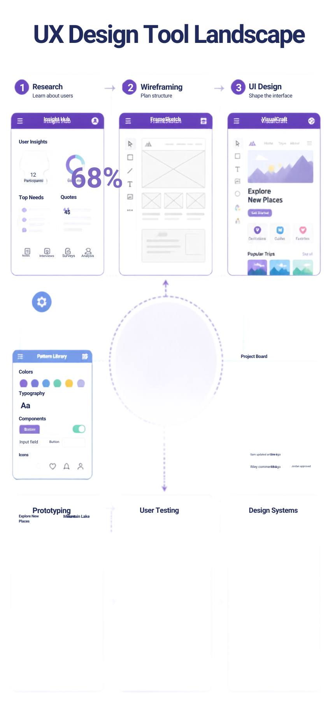
While Figma itself is not open-source, it offers a free version with extensive features and a vibrant community contributing to plugins and templates. It's widely used for UI/UX design, prototyping, and collaboration.
2. Penpot
Penpot is an open-source design and prototyping tool that supports real-time collaboration and is web-based, making it accessible from any device with a browser.
Website: Penpot
3. Inkscape
Inkscape is a vector graphics editor that's widely used for design tasks. It's not specifically tailored for UI/UX but can be very useful for creating detailed graphics, icons, and more.
Website: Inkscape
4. GIMP
GIMP (GNU Image Manipulation Program) is an open-source raster graphics editor. Like Inkscape, it's not specifically for UI/UX design, but it's powerful for creating and editing images.
Website: GIMP
5. Krita
Krita is an open-source painting program, primarily aimed at digital painting but can also be used for UI/UX design, especially for concept art and detailed illustrations.
Website: Krita
6. Pencil Project
Pencil Project is an open-source GUI prototyping tool. It's user-friendly and suitable for creating wireframes and mockups.
Website: Pencil Project
7. Akira
Akira is an open-source design tool built specifically for Linux. It's aimed at UI and UX designers and supports vector graphics design.
Website: Akira
8. SVG-Edit
SVG-Edit is a web-based free and open-source vector graphics editor. It's useful for creating SVG files, which are commonly used in web design.
Website: SVG-Edit
9. LibreOffice Draw
LibreOffice Draw is a vector graphics editor that's part of the LibreOffice suite. It's versatile and can be used for a variety of design tasks, including UI/UX design.
Website: LibreOffice Draw
Creating prototypes, wireframes, and visual designs
Creating prototypes, wireframes, and visual designs is a multi-step process that involves different tools and techniques to develop and refine a user interface (UI) and user experience (UX). Here's a guide on how to approach each step along with the tools you might use:
1. Wireframing
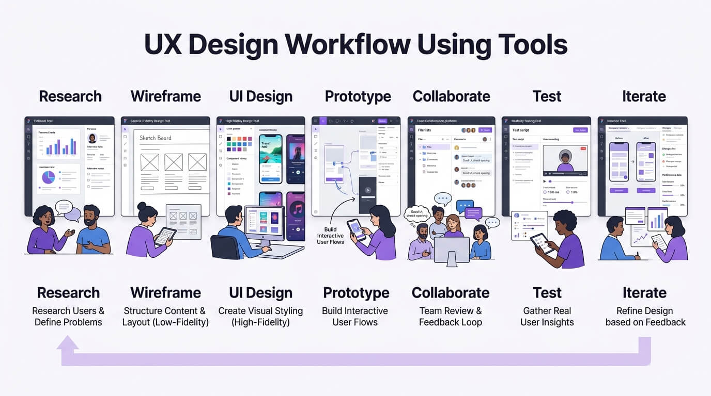
Wireframes are basic, low-fidelity representations of your design. They focus on layout and content placement without detailing color, typography, or graphics.
Tools for Wireframing:
Balsamiq: Known for its simplicity and ease of use, ideal for rapid wireframing.
Sketch: With plugins like Sketch Measure for annotations.
Figma: Provides components and collaborative features.
Adobe XD: Allows creating low-fidelity wireframes and easy transitions to high-fidelity designs.
Axure RP: For detailed wireframes with added interactivity if needed.
Steps:
Define the Purpose: Understand the goals of the design and the user's needs.
Layout the Structure: Arrange the key elements (headers, footers, content areas) in a logical way.
Add Navigation: Ensure that the navigation elements are clear and intuitive.
Detail Key Elements: Include placeholders for images, buttons, and other interactive elements.
Iterate: Get feedback and refine the wireframes.
2. Visual Design
Visual design involves adding colors, typography, images, and other design elements to create a polished, high-fidelity interface.
Tools for Visual Design:
Sketch: Popular for creating detailed visual designs and UI elements.
Adobe XD: Combines wireframing, visual design, and prototyping.
Figma: Excellent for collaboration and creating visually appealing designs.
Adobe Illustrator: For creating detailed vector graphics and icons.
Affinity Designer: A more affordable alternative to Adobe Illustrator with similar capabilities.
Steps:
Style Guide: Define a style guide with colors, fonts, and component styles.
Apply Styles: Use the style guide to apply consistent design elements to the wireframes.
Enhance with Graphics: Add images, icons, and other visual elements to enhance the design.
Refine: Ensure the design aligns with brand guidelines and user expectations.
Get Feedback: Share the design with stakeholders and refine based on feedback.
3. Prototyping
Prototyping involves creating interactive simulations of your design to test user interactions and flow.
Tools for Prototyping:
InVision: Great for turning static designs into interactive prototypes.
Figma: Supports interactive prototypes with transitions and animations.
Adobe XD: Provides advanced prototyping features like auto-animate.
Axure RP: Allows for detailed, high-fidelity prototypes with complex interactions.
Proto.io: Offers a comprehensive tool for creating fully interactive prototypes.
Steps:
Set Up Artboards/Screens: Create all the necessary screens for your prototype.
Link Interactions: Define clickable areas and link them to corresponding screens.
Animate Transitions: Add transitions and animations to mimic real interactions.
Test Interactivity: Ensure all links and interactions work as intended.
User Testing: Conduct usability testing to gather feedback and make necessary adjustments.
Integrating the Workflow
Start with Wireframes: Use tools like Balsamiq or Sketch to outline the basic structure.
Move to Visual Design: Transition your wireframes to high-fidelity designs in tools like Figma, Sketch, or Adobe XD.
Create Prototypes: Use the same tool or integrate with tools like InVision or Proto.io for interactive prototypes.
Example Workflow
Wireframe in Balsamiq: Quickly sketch out the layout and structure.
Design in Figma: Import your wireframe and apply visual styles, colors, and typography.
Prototype in Figma: Add interactions and transitions within the same tool.
User Test with InVision: Share the prototype with users and gather feedback.
By following these steps and utilizing the appropriate tools, you can effectively create wireframes, visual designs, and prototypes to develop user-centered UI/UX designs.
Key Terms
| Term | Simple meaning |
|---|---|
| Fidelity | How close a design is to the final look and feel |
| Wireframe | A low-fidelity structural layout |
| Mockup | A high-fidelity static visual design |
| Prototype | An interactive representation of a design |
| Open-source tool | Free, community-maintained software with visible source code |
Mistake: Expensive proprietary software is always better.
Correct: Open-source or free-tier tools (Penpot, Figma free tier) are sufficient for most coursework and small projects.
Mistake: You need to memorise every tool's menu layout for exams.
Correct: Exams usually test understanding of what each tool or stage is for, not where its buttons are.
Learn the fidelity ladder by heart — many questions ask you to place a term (wireframe, mockup, prototype) at the correct fidelity level.
- Open one free tool (e.g. Figma or Penpot).
- Recreate a simple login screen as a low-fidelity wireframe.
- Convert it into a high-fidelity mockup with colour and type.
- Add one clickable interaction to make it a basic prototype.
- Note which stage took the longest, and why.
Information hierarchy, user flows, wireframes, usability and accessibility principles.
How structuring content well reduces the effort a user needs to find what they want.
Card sorting, sitemaps, user-flow diagrams, low-fidelity wireframes.
Structure comes before visuals — fix the map before you decorate the roads.
DAD 6208.4 UI/UX
Information Architecture and Interaction Design
Organizing and structuring information.
Organizing and structuring information is a crucial aspect of Information Architecture (IA) and Interaction Design (IxD). Here's a comprehensive overview covering key concepts, principles, and practices in these fields:
Information Architecture (IA)
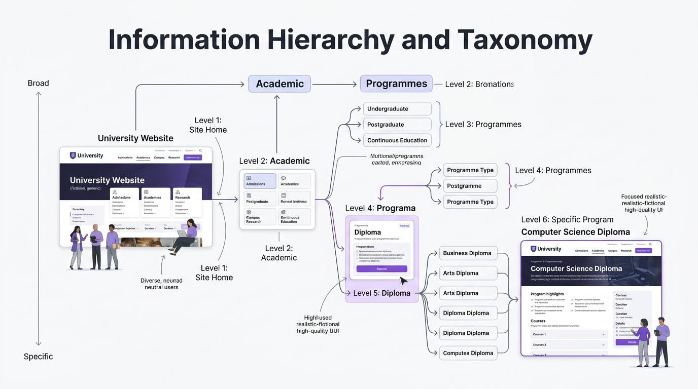
Definition
Information Architecture is the practice of organizing and structuring information to support usability and findability. It involves creating a blueprint for how information is laid out and connected within a system, such as a website, application, or other digital environments.
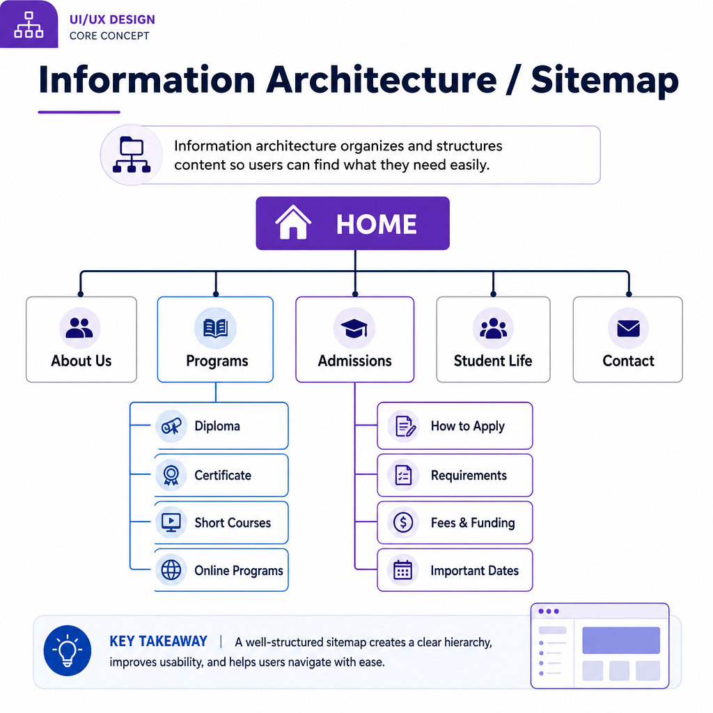
Key Concepts
Hierarchies and Taxonomies:
Hierarchical Structures: Organizing information in a tree-like structure, where broad categories branch into more specific subcategories. Examples include website navigation menus where The content is organized hierarchically, with the most critical information at the top and the least important at the bottom.
Taxonomies: Classifying information into categories and subcategories, often using metadata to describe and manage content.
Card Sorting:
A user-centered design method used to determine how users group information. Participants organize cards representing information items into categories that make sense to them.
Participants receive a set of cards (on the left), organize them into piles, and label each pile (on the right) based on what makes the most sense.
Visual Sitemaps:
Visual representations of the structure of a website or application. They show how different sections and pages are connected and help in planning navigation and content organization.
Content Inventory and Audits:
Cataloging all the content within a system and evaluating its quality, relevance, and usefulness. Helps identify redundancies, gaps, and areas for improvement.
Wireframes and Mockups:
Low-fidelity sketches or digital designs that outline the layout and structure of pages, showing how content and navigation will be arranged.
Principles
Clarity:
Ensuring information is organized in a clear, understandable manner.
Consistency:
Maintaining uniformity in the organization, labeling, and navigation across the system to help users predict and understand patterns.
Accessibility:
Making information easily accessible to all users, including those with disabilities. This includes designing with assistive technologies in mind.
Findability:
Ensuring users can easily find the information they are looking for through effective navigation and search functionality.
User-Centered Design:
Organizing information based on user needs, behaviors, and preferences.
Interaction Design (IxD)
Definition
Interaction Design focuses on creating engaging interfaces with well-thought-out behaviors. It is concerned with how users interact with technology and ensuring those interactions are intuitive, efficient, and satisfying.
Key Concepts
Affordances and Signifiers:
Affordances: The properties of an object that indicate how it can be used (e.g., a button that looks pressable).
Signifiers: Visual cues that guide users on what actions are possible (e.g., arrows indicating a swipe action).
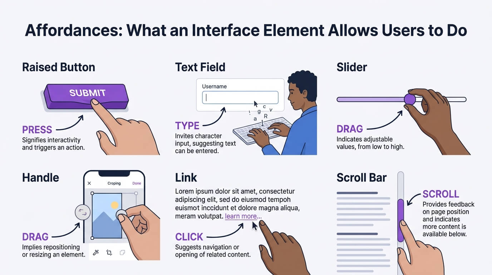
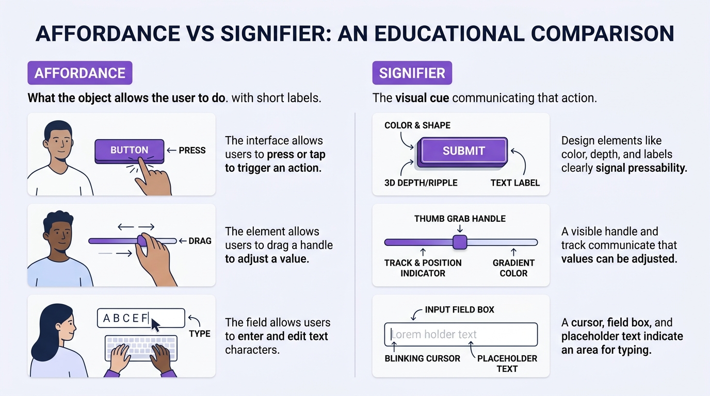
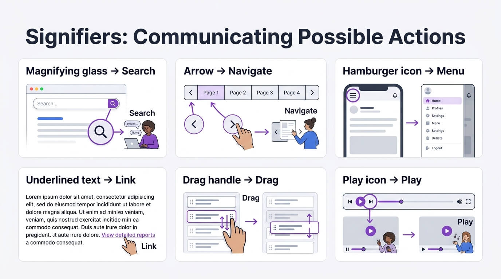
Feedback:
Providing users with immediate and clear responses to their actions. This can be visual, auditory, or tactile feedback.
Consistency and Standards:
Using familiar design patterns and adhering to established standards to make interfaces predictable and learnable.
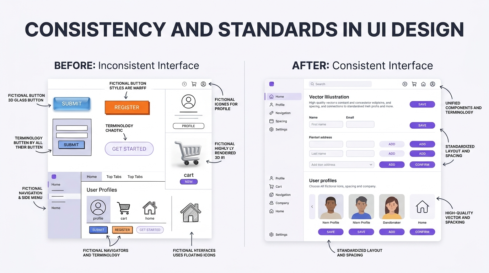
Error Prevention and Recovery:
Designing interfaces that prevent errors from occurring and providing easy ways to recover from errors when they do happen.
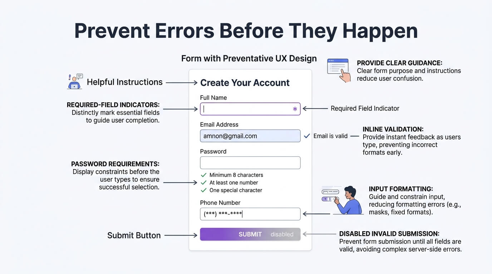
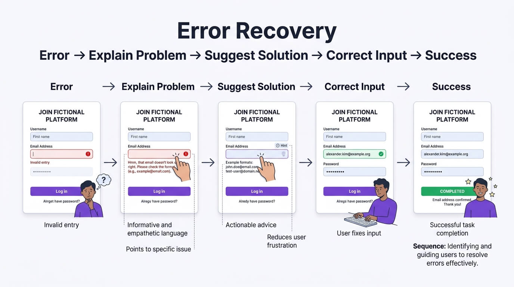
error prevention by telling me where exactly I have made an error. In this case, it tells me that I have entered a wrong password.
Mailchimp demonstrating error prevention , this time when a user wants to send emails.
User Flows and Task Analysis:
Mapping out the steps users take to complete tasks, ensuring the process is streamlined and logical.
Prototyping:
Creating interactive models of the design to test and refine interactions before full-scale development.
Principles
Simplicity:
Designing interactions that are straightforward and easy to understand.
Visibility:
Making important elements and functions easily discoverable.
Feedback:
Providing clear, immediate feedback for user actions.
Tolerance:
Designing flexible and forgiving interfaces that can handle errors gracefully.
Accessibility:
Ensuring interactions are accessible to all users, including those with disabilities.
Integrating IA and IxD
User Research:
Conducting research to understand user needs, behaviors, and preferences, which informs both IA and IxD decisions.
Iterative Design Process:
Using an iterative approach to design, test, and refine IA and IxD elements based on user feedback.
Cross-disciplinary Collaboration:
Collaborating with other disciplines such as content strategy, visual design, and development to create cohesive and comprehensive user experiences.
Usability Testing:
Continuously testing both the information structure and interactive elements with real users to identify issues and opportunities for improvement.
Documentation and Guidelines:
Creating comprehensive documentation and guidelines to ensure consistency and clarity in both IA and IxD across the project lifecycle.
By adhering to these principles and integrating these practices, information architects and interaction designers can create effective, user-centered digital experiences that are both functional and enjoyable.
User flows and wireframes.****
User flows illustrate the steps a user takes to accomplish a task within a product. Wireframes are low-fidelity (lo-fi), schematic representations of a product's layout, focusing on structure and functionality, aiding in visualizing and refining design concepts.
User flows are a great visual representation of how your user will move through your app or webpage. They help determine exactly how many pages you’ll need for the user to effortlessly complete a specific task or achieve a certain goal. Creating a UX flow often means sketching out a diagram that helps you order your web or app screen pages in a way that best fits the users’ needs. Here you’ll determine what pages need to be designed and in what order they will be arranged. These flowcharts layout the product as a whole and give your clients and colleagues a visual representation of how the user will progress through the app or product.
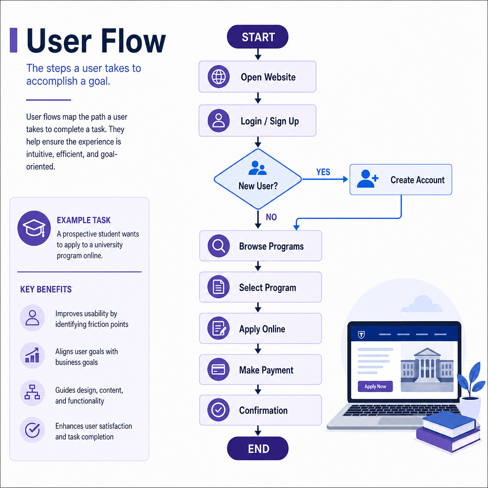
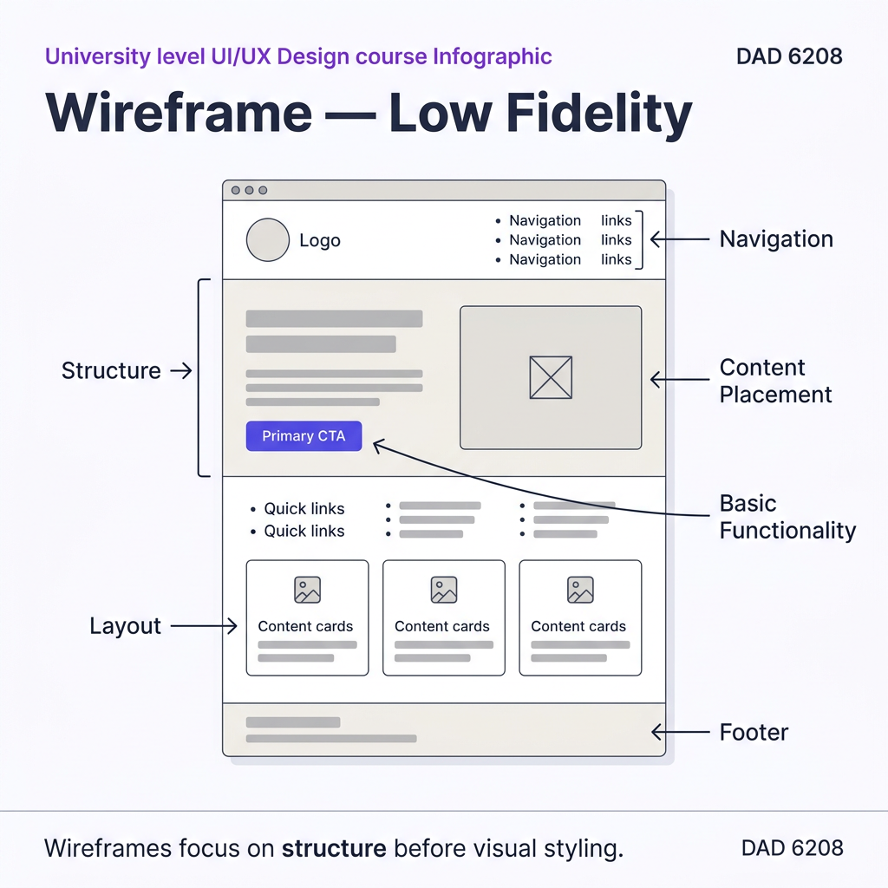
User flows
User flows, UX flows, or flowcharts, as they are sometimes called, are diagrams that display the complete path a user takes when using a product.
The flowchart begins with the consumer’s entry point on the product, like an onboarding screen or homepage, and ends with the final action or outcome, like purchasing a product or signing up for an account. Depicting this process allows designers to evaluate and optimize the user experience and therefore increase client conversion rates.
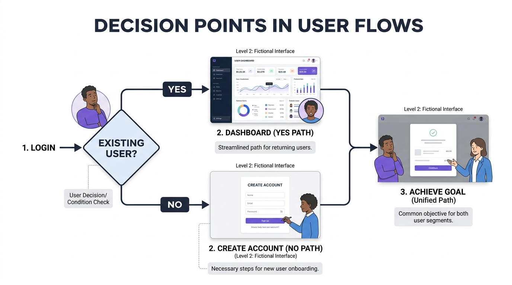
Each touchpoint on the user’s journey is represented by a node in the flow chart. These nodes are characterized by shape, and each shape indicates a particular process.
For instance, a diamond means a decision is being made and is therefore followed by “Yes” and “No” arrows. A rectangle indicates a task or action that needs to be taken, like “Log in” or “Purchase”.
Usefulness or purposes of User flows
Create an intuitive interface
Evaluate existing interfaces
Present your product to clients or colleagues
Types of user flows/ flowcharts
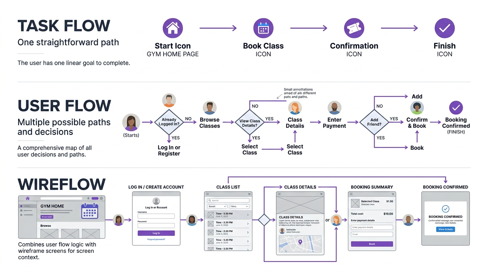
Task flows
Task flows focus on how users travel through the platform while performing a specific task. They generally show only one path and don’t include multiple branches or pathways like a traditional user flow might. These are best used when the task being analysed is accomplished similarly by all users. When using task flows, it is assumed that all users will share a common starting point and have no variability in the way the task is carried out.
Wire flows
Wireflows are a combination of wireframes and flowcharts. They utilize the layout of individual screens as elements within the diagram.
Wireframes on their own help convey the layout and design on each individual page, but lack the ability to communicate the page-to-page flow of heavily dynamic interfaces. Wireflows add page context to UX flows, since what users see on each screen greatly impacts their experience through the app or website.
Wireflows are especially great when creating mobile screens. The relatively small size of the mobile screens are easily used to replace the more abstract shapes of flow charts.
User flows focus on the way your target audience will interact with the product. They emphasize that all users might not perform tasks the same and may travel in different paths.
They are typically attached to a specific persona and entry point. Therefore, when using this type of flowchart, you may have many different scenarios that start at different places. However, the main task or accomplishment is usually always the same.
Wireframes
Wireframes, on the other hand, are much more static and help you explore all the different ways you can design a single page. When constructing a wireframe, you’ll decide what images, buttons, or text to include and where on the page they should go. Often, designers will brainstorm as many ways to design the same page as possible by sketching out as many different layouts as they can think of. An example of this is the Crazy 8s exercise where you come up with eight unique layouts for a single screen om eight minutes.
Exercise:
Create 8 unique wireframe layouts for the nit.ac.ke website home page in eight minutes.
Three key principles for a good wireframe
Maintain clarity
Gain user confidence
Simplicity is key
What is a wireframe?
Wireframing is a practice used by UX designers which allows them to define and plan the information hierarchy of their design for a website, app, or product. This process focuses on how the designer or client wants the user to process information on a site, based on the user research already performed by the UX design team.
When designing for the screen you need to know where all the information is going to go in plain black and white diagrams before building anything with code—whether that’s a developer coding it, or you the designer. Wireframing is also a great way of getting to know how a user interacts with your interface, through the positioning of buttons and menus on the diagrams.
Without the distractions of colors, typeface choices or text, wireframing lets you plan the layout and interaction of your interface. A commonly-used argument for wireframing is that if a user doesn’t know where to go on a plain hand-drawn diagram of your site page, then it is irrelevant what colors or fancy text eventually get used. A button or call to action needs to be clear to the user even it’s not brightly colored and flashing.
Some people like to draw their wireframes by hand, others feel more comfortable using software like Invision, Balsamiq, Adobe XD, Illustrator, Figma, or Photoshop to create theirs.
Wireframes drawn with paper and a pencil, or at a whiteboard, have the advantage of looking and being very easy to change, which can help tremendously in early conversations about your website or product.
With the help of paper-prototypes, you can test with end users at every stage of ideation and design. Changes at these stages are much easier—and therefore cheaper—than changes deemed necessary after coding is under way.
Switching later to software (after initially hand-drawing your wireframe) allows you to keep track of more detailed decisions.
Figure 1Wireframes from CareerFoundry student Samuel Adaramola:
Here are a number of ways different designers can structure the process from design to implementation due to how much emphasis there is on visual design in a project, and how much uncertainty there is with respect to what is being designed.
Wireframe > Interactive Prototype > Visual > Design
Sketch > Code
Sketch > Wireframe > Hi-Def Wireframe > Visual > Code
Sketch > Wireframe > Visual > Code
If the task is very narrow and the visual design is either set or considered unimportant (such as with many backend administrative interfaces), then going from a sketch to coding/development makes sense, whereas if the time and resources and the business value are all high, then spending the time to make a high-definition wireframe and going through a cycle of testing with a fully realized interactive prototype makes better sense.
6 Steps to make a wireframe
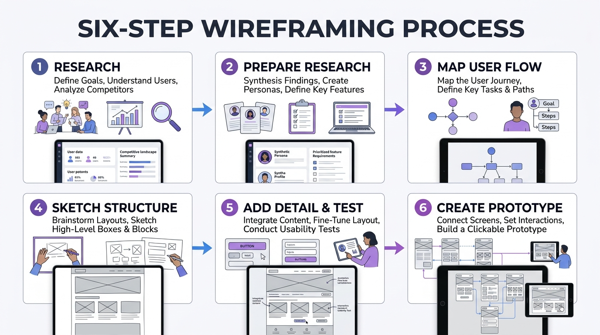
Do your research
Prepare your research for reference
Make sure you have your user flow mapped out
Draft, don’t draw. Sketch, don’t illustrate
Add some detail and get testing
Start turning your wireframes into prototypes
1. Do your research
UX design is a process, and wireframing isn’t the first step in this process. Before you even think about picking up a pen and paper, you need to have covered the first two steps; namely understanding who your audience is by way of user research, detailing requirements, creating user personas and defining use cases, and complementing this with further competitor and industry research.
That means carrying out analysis of similar product lines to your own, digging into prevailing UX trends and best practises, and, of course, reviewing your own internal design guidelines.
And if you’re designing a new feature, don’t be afraid to research
outside of your domain. “Introducing tracking and data visualization
as part of your logistics company’s service? Perhaps it’s worth checking
out some fitness or nutrition apps on Dribbble or Behance for some
ideas. Creativity is often set loose at point where fields of expertise
intersect, after all.”
2. Prepare your research for quick reference
This involves production and analysis of quantitative and qualitative data in various phases of the project which might be alot. Well, that’s what you need to keep in mind while drawing out your wireframes. If you’re a mere mortal, you might struggle to both retain and recall all of that, so a quick fix would be scribbling a cheatsheet(a concise set of notes used for quick reference) with your business and user goals (your requirements), your personas, use cases, and perhaps some reminders of the coolest features you stumbled across in your competitor research. A few choice quotes from your audience might also help focus your attention on the user’s experience, which is—never forget—what you’re designing!
3. Make sure you have your user flow mapped out
Your wireframing is going to get very messy very quickly if you don’t have an idea of how many screens you’ll need to produce and the flow you expect the user to follow. It’s important to have a watertight concept of where your users will be coming from (which marketing channel), and where you need them to end up. If you’re already well-acquainted with UX vocabulary, your internal voice will be alternately screaming “user flows” and “information architecture”.
Good information architecture will ensure that your users are self-sufficient (fewer messages to your customer service asking how to do something painfully simple), lower levels of user frustration (and ultimately more satisfaction and trust), and therefore lower drop-off or drop-out rates. Which probably means more revenue, and probably means happy managers—and a job well done.
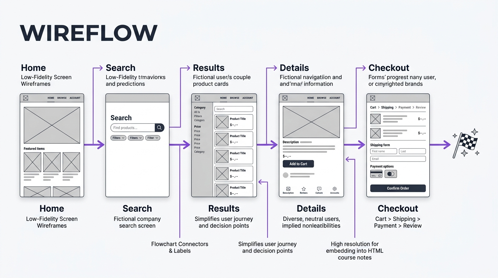
4. Draft, don’t draw. Sketch, don’t illustrate
Remember: you’re outlining and representing features and formats, not illustrating in mighty fine detail. There’s nothing worse than a blank piece of paper, so you need to start getting your ideas down pronto—that’s the imperative for step three. Don’t think about aesthetics, don’t think about colors—the UI designer can deal with that. And if you’re the only designer at your fledgling startup… well, just do it later.
A good, thick marker pen (a Sharpie, as our friends in the US call them) is a handy tool for this stage of wireframing. Why? Because it prevents you from drowning yourself in detail. You’ll focus on delineating the functional blocks that form the skeleton of your design.
Pose yourself the following three questions while you’re sketching:
How can you organise the content to support your users’ goals?
Which information should be most prominent? Where should your main message go? What should the user see first when arriving at the page?
What will the user expect to see on certain areas of the page?
Which buttons or touch points does the user need to complete the desired actions?
Once you have a few variations of your first screens, you might want to do a bit of collaborative wireframing with a fellow designer or product manager. What’s that mean? Simple. Lift your wireframes off the paper and onto a whiteboard, and play around with them. Ask yourself and one another; “Are we creating something usable that meets our audience’s needs?”
5. Add some detail and get testing
So you have a flow and you have your screens, and you’ve corroborated your ideas with some clued-up colleagues. The next step is to add some informational details to prepare your wireframe for its upgrade, Megatron-style, to prototype-mode.
Add detail in the way you would naturally process a screen, or the page of a book: from top-to-bottom and left-to-right. Remember: Your wireframe is the skeleton of your site. You’re not adding the muscle just yet—the content and the copy. To extend the metaphor somewhat uncomfortably, these elements are the ligaments and tendons that will connect form and functionality. Think about the following:
Usability conventions, such as putting the navigation at the top next to your logo, having a search box on the top right, and so on
Simple, instructional wording for i.e. calls-to-action
Trust-building elements: What do you need to build trust in your customers and where would be the best place to put these elements?
Tooltips to indicate any functionality that could be included in a prototype transition
Once you’ve done all that, you’re ready for your first user tests. At this stage, your users may well be your colleagues. Indeed, one of the joys of the humble wireframe is that it serves as a common language between designers, stakeholders and web and app developers. You can use tools like Figma, UsabilityHub to preference test screens and collect qualitative feedback, and Prott to test and check understanding of the basic user flow. With this tool, you can simply photograph and upload your hand-sketched wireframes, and then connect them to user button overlays. Clever stuff!
6. Start turning your wireframes into prototypes
Once you’ve documented and acted upon the feedback from your first prototype, you can start developing your high-fidelity prototypes. There are lots of slick tools out there for this, from Proto.io to Framer, but the most well-known are Sketch and the browser-based, new(ish) kid-on-the-block, Figma. Once you’ve developed your wireframes in Sketch, you can import them into the industry-leading prototyping tool InVision and interlink your screens for a second round of high-fidelity user testing. It’s at this point that we’ve most certainly crossed from wireframing to prototyping.
Principles of usability
The principles of usability are fundamental guidelines designed to ensure that websites, software, and other digital products are easy to use and meet the needs of their users. These principles help in creating intuitive, efficient, and satisfying user experiences. Here are the key principles of usability:
1. Learnability
Ease of Learning: Users should be able to accomplish basic tasks the first time they encounter the design. The interface should be intuitive and easy to grasp, reducing the learning curve.
Consistency: Consistent design patterns and elements help users predict and understand how to interact with the interface.
2. Efficiency
Task Efficiency: Once users have learned the design, they should be able to perform tasks quickly. This involves minimizing the number of steps to complete a task and providing shortcuts for frequent actions.
Responsive Design: The system should respond quickly to user actions, minimizing wait times and providing feedback promptly.
3. Memorability
Retention Over Time: After users have learned the design, they should be able to return to it after a period of not using it and still remember how to use it effectively. Familiar interfaces and clear navigation aid memorability.
4. Error Handling
Error Prevention: The design should prevent errors from occurring by guiding users and providing clear instructions.
Error Recovery: When errors do occur, users should be able to understand what went wrong and how to fix it. This includes clear error messages and the ability to undo actions.
5. Satisfaction
User Satisfaction: The design should be pleasant to use, providing a positive user experience. This includes aesthetic design, enjoyable interactions, and the overall emotional impact of the interface.
6. Accessibility
Inclusive Design: The interface should be accessible to users with disabilities. This includes providing text alternatives for non-text content, ensuring sufficient contrast, and supporting keyboard navigation.
7. Consistency and Standards
Adherence to Conventions: Following platform conventions and industry standards helps users transfer their knowledge from other similar applications, reducing the learning curve.
Predictable Behavior: Consistent behavior across similar actions or elements ensures users know what to expect.
8. Effective feedback
Immediate Feedback: The system should provide immediate and clear feedback for users’ actions, indicating that their inputs have been received and processed.
Action Confirmation: Feedback should confirm when an action has been successfully completed or if further steps are needed.
9. Visibility (Clear information presentation)
Clear Visibility: Important information should be easily visible and accessible without unnecessary clutter. Key functions and content should be prioritized.
System Status: The design should always keep users informed about what is going on, through appropriate feedback within a reasonable time.
10. Flexibility and Efficiency of Use
Adaptable Interfaces: The design should cater to both novice and experienced users, offering shortcuts and customization options for those who need them.
User Control: Users should feel in control of the interface, able to navigate and complete tasks without feeling constrained.
11. Intuitive Navigation
Clear Pathways: The navigation should be easy to understand and use, allowing users to find what they are looking for without confusion. This involves clear labels, logical menu structures, and easy access to key areas of the site.
Breadcrumbs and Navigation Aids: Providing visual aids like breadcrumbs and navigation maps helps users understand their current location within the site and how to return to previous pages or sections.
12. Minimal Cognitive Load
Simplicity: The design should minimize the amount of mental effort required to use it. This includes reducing clutter, avoiding complex instructions, and breaking tasks into simple, manageable steps.
Focus on Key Tasks: Highlighting the most important tasks and information ensures that users can complete their objectives without unnecessary distractions or complications.
Principles of accessibility
Ensuring that digital products are accessible involves adhering to key principles that guarantee inclusivity and usability for all users, including those with disabilities. Here are the main principles, including the importance of accessibility guidelines:
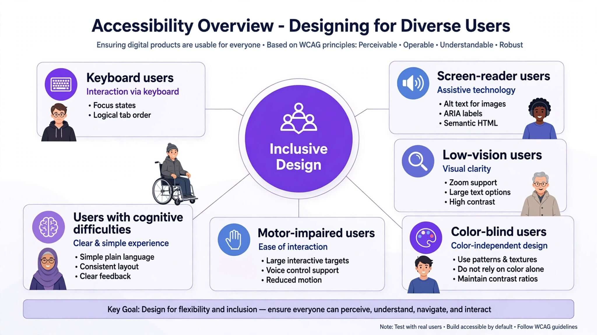
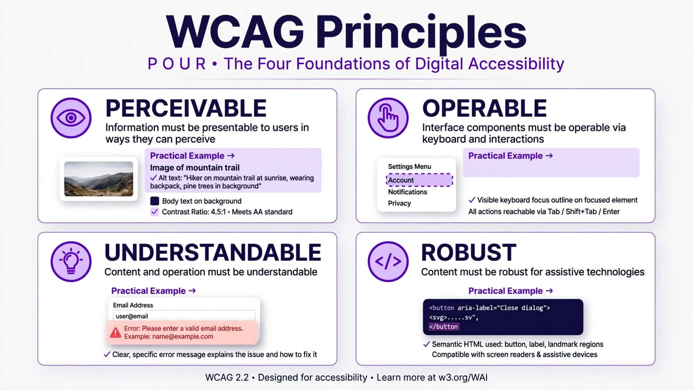
1. Perceivable
Text Alternatives: Provide text alternatives for any non-text content so that it can be changed into forms that people need, such as large print, braille, speech, symbols, or simpler language.
Time-based Media: Provide alternatives for time-based media. This includes captions for videos, transcripts for audio content, and audio descriptions for visual content.
Adaptable: Create content that can be presented in different ways (e.g., simpler layout) without losing information or structure.
Distinguishable: Make it easier for users to see and hear content, including separating foreground from background. Use sufficient contrast and make sure content is not conveyed by color alone.
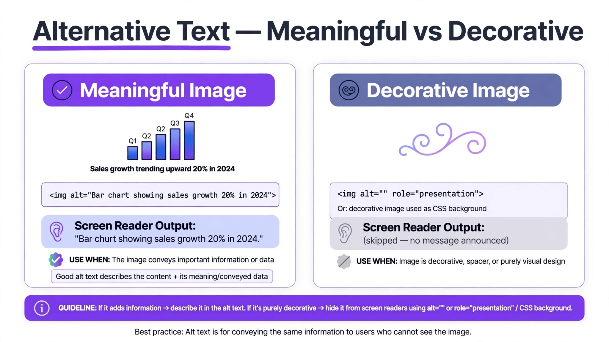
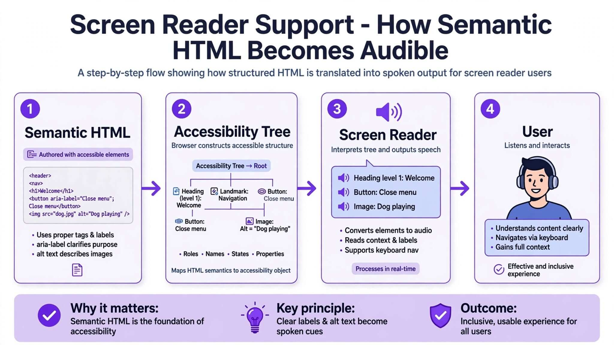
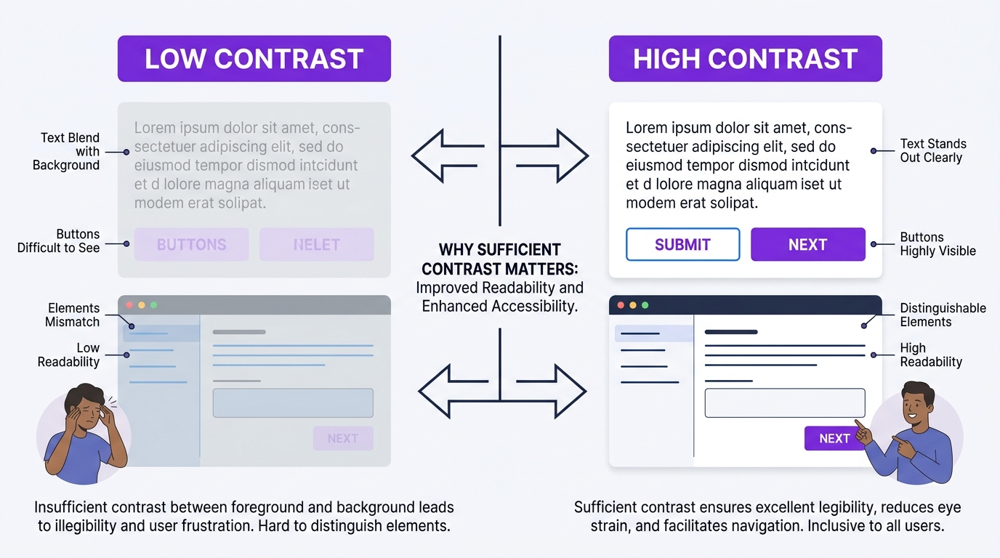
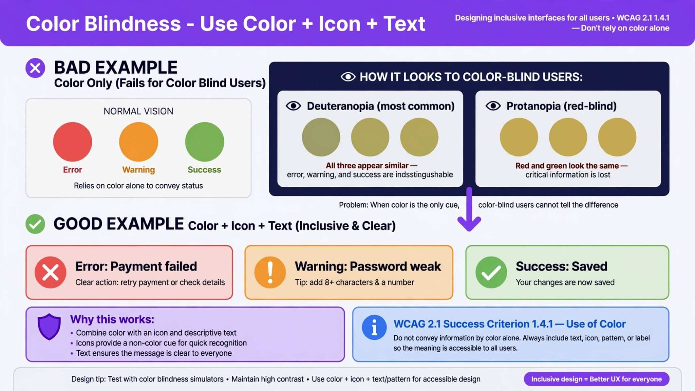
2. Operable
Keyboard Accessible: Ensure that all functionality is available from a keyboard. This is crucial for users who cannot use a mouse.
Enough Time: Provide users enough time to read and use content. This can include adjustable time limits or the ability to pause/stop content.
Seizures and Physical Reactions: Do not design content in a way that is known to cause seizures or physical reactions. Avoid flashing lights and strobe effects.
Navigable: Provide ways to help users navigate, find content, and determine where they are. This includes clear navigation options, headings, and consistent layouts.
Input Modalities: Make it easier for users to operate functionality through various inputs beyond the keyboard, such as voice commands, gestures, and touch.
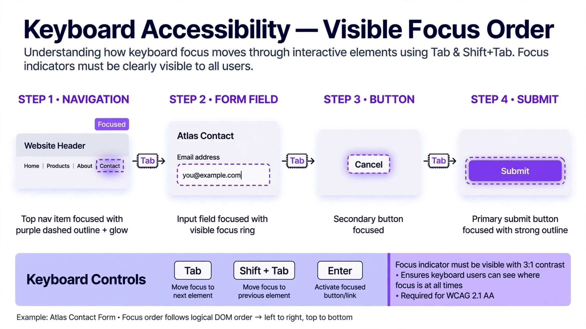
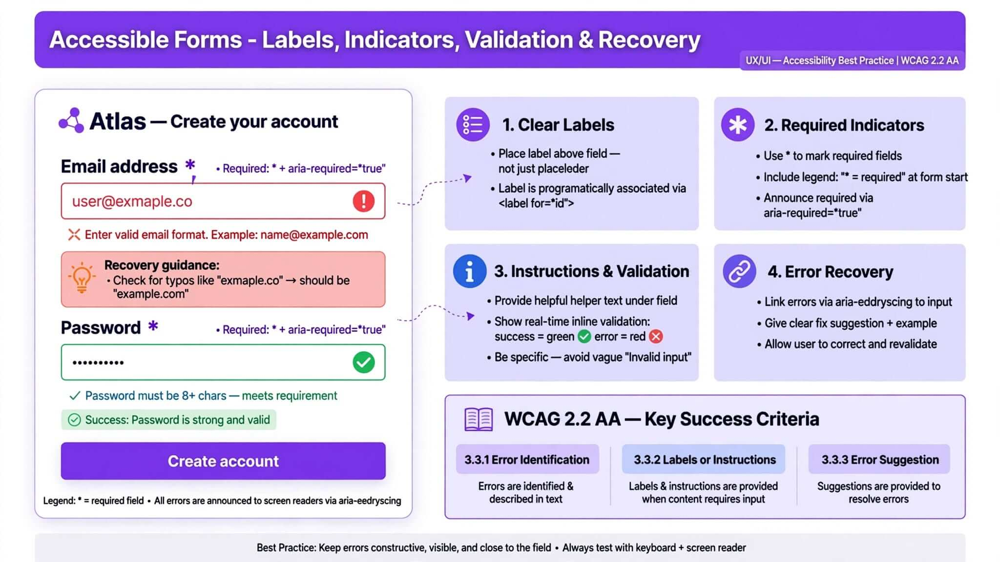
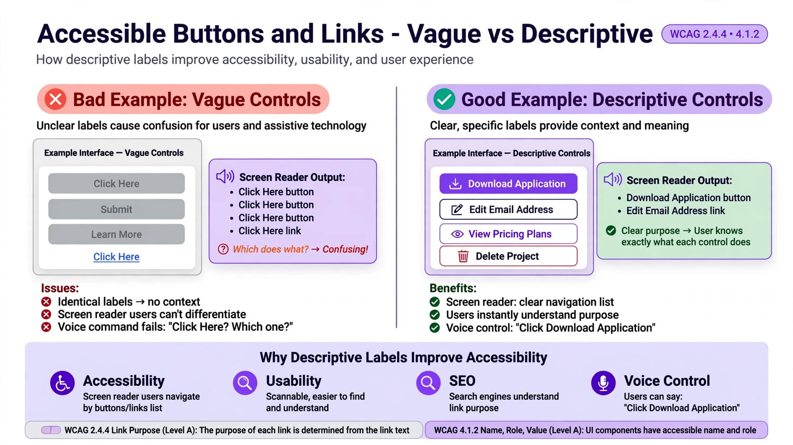
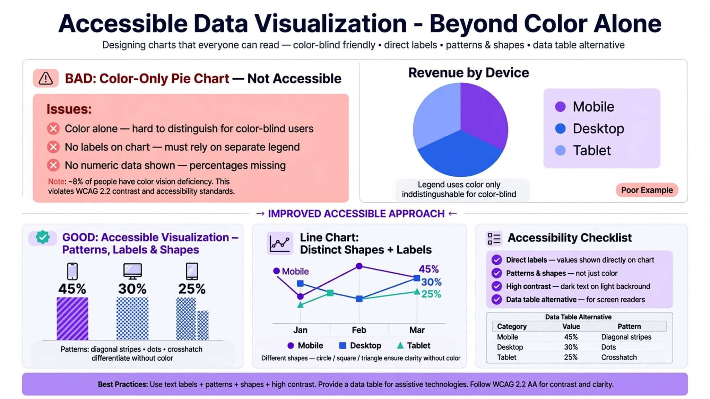
3. Understandable
Readable: Make text content readable and understandable. Use clear and simple language, avoid jargon, and provide explanations for complex terms.
Predictable: Make web pages appear and operate in predictable ways. Ensure that user interface components behave consistently across the site.
Input Assistance: Help users avoid and correct mistakes. This includes providing error messages that are easy to understand and offering suggestions for corrections.
4. Robust
Compatible: Maximize compatibility with current and future user agents, including assistive technologies. This involves using standard HTML and CSS, and ensuring that the code is error-free and follows best practices.
5. Accessibility Guidelines
WCAG Compliance: Follow the Web Content Accessibility Guidelines (WCAG) developed by the World Wide Web Consortium (W3C). These guidelines provide a comprehensive framework for making web content more accessible.
Levels of Conformance: Adhere to the three levels of conformance: A (basic accessibility), AA (addresses the biggest and most common barriers), and AAA (the highest and most complex level of web accessibility).
Regular Updates: Stay updated with the latest versions of WCAG and ensure ongoing compliance as guidelines evolve.
EXERCISE (Information Hierarchy)
Card sorting exercise using actual content from the Nairobi Institute of Technology (NIT) website. Card sorting helps you understand how users categorize and label information, which can inform your site's information architecture.
Steps for Conducting a Card Sorting Exercise
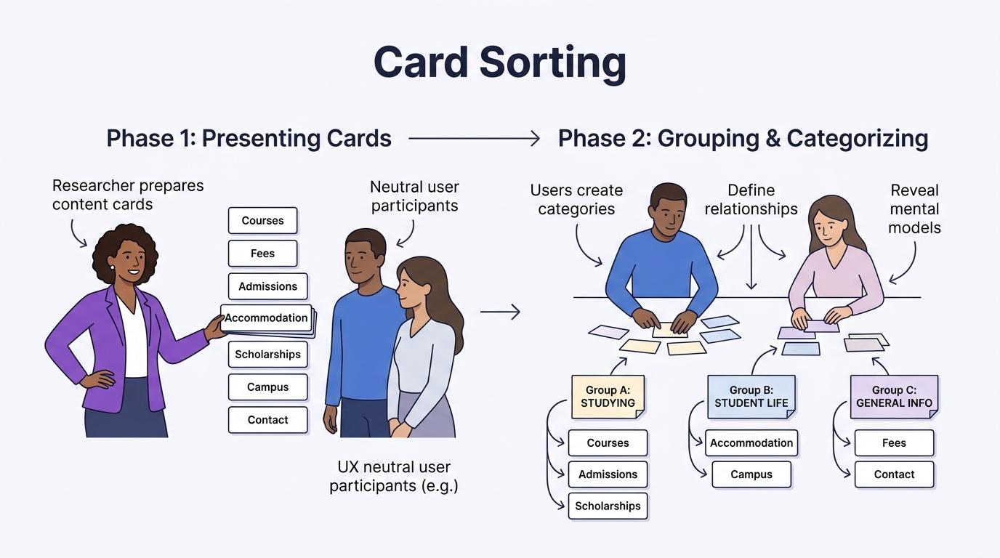
1. Preparation
Gather Content:
Visit the NIT website and list down various pieces of content, sections, and pages. Here’s a hypothetical list of content from the NIT website:
About Us
Vision and Mission
History
Administration
Academic Programs
Undergraduate Programs
Postgraduate Programs
Diploma Programs
Admission Requirements
Application Process
Fees Structure
Scholarships
Research
News and Events
Student Portal
Library
Contact Us
Campus Facilities
Alumni
Create Cards:
Write each piece of content on individual cards. You can use physical index cards or an online card sorting tool.
2. Choose a Card Sorting Method
Open Card Sorting:
Participants create their own categories and group the cards accordingly.
Closed Card Sorting:
Participants sort the cards into predefined categories.
Hybrid Card Sorting:
Participants start with predefined categories but can also create their own categories if necessary.
For this demonstration, we’ll use Open Card Sorting.
3. Conduct the Card Sorting Exercise
Recruit Participants:
Aim for a diverse group of users that represent your target audience. Aim for at least 5-10 participants.
Instructions:
Explain the purpose of the exercise to the participants.
Ask them to group the cards in a way that makes sense to them and label each group.
Perform the Sorting:
If using physical cards, provide a large surface for participants to spread out the cards.
If using an online tool, set up the session and send participants the link.
Tools for Online Card Sorting:
Optimal Workshop
4. Analyze the Results
Group Analysis:
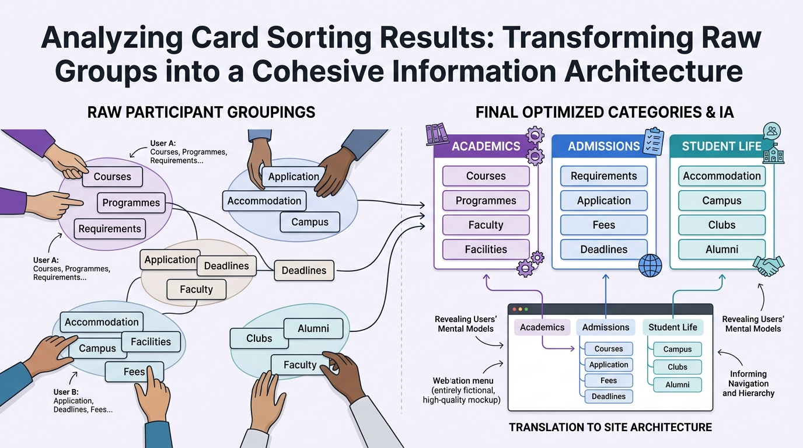
Collect all the sorted groups and labels from participants.
Look for patterns and common groupings. Identify how most participants grouped the content and labeled the categories.
Affinity Diagram:
Create an affinity diagram by grouping similar responses together.
Use this diagram to visualize the relationships between different pieces of content and how users expect to find them.
Identify Key Categories:
Determine the most common categories that emerged from the card sorting.
Note any outliers or unique groupings that might provide additional insights.
5. Develop Information Architecture
Create a Sitemap:
Based on the card sorting results, develop a new or improved sitemap for the NIT website.
Ensure that the categories and subcategories align with user expectations.
Test the New Structure:
Conduct usability testing with a prototype of the new structure to ensure it meets user needs.
Iterate based on feedback and testing results.
Example Card Sorting Results and Analysis
Hypothetical Groupings from Participants:
Group 1: About NIT
About Us
Vision and Mission
History
Administration
Group 2: Academics
Academic Programs
Undergraduate Programs
Postgraduate Programs
Diploma Programs
Admission Requirements
Application Process
Fees Structure
Scholarships
Group 3: Research and News
Research
News and Events
Group 4: Student Resources
Student Portal
Library
Campus Facilities
Group 5: Community
Alumni
Contact Us
Developing a New Sitemap:
1. About NIT
About Us
Vision and Mission
History
Administration
2. Academics
Undergraduate Programs
Postgraduate Programs
Diploma Programs
Admission Requirements
Application Process
Fees Structure
Scholarships
3. Research and News
Research
News and Events
4. Student Resources
Student Portal
Library
Campus Facilities
5. Community
Alumni
Contact Us
Conclusion
By conducting a card sorting exercise using actual content from the NIT website, you can gain valuable insights into how users naturally categorize information. This process helps ensure that the website's information architecture is intuitive and aligns with user expectations, ultimately improving the overall user experience.
EXERCISE (Information Hierarchy)
Creating a sitemap for the Nairobi Institute of Technology (NIT)
website:
This involves organizing its content into a hierarchical structure that
reflects the site's navigation. Here's a step-by-step guide using actual
content from the NIT website:
Steps to Create a Site Map for NIT Website:
1. Gather Content:
Visit the NIT website and list down all the main sections and pages available. Here’s a hypothetical list of content from the NIT website:
Home
About Us
Vision and Mission
History
Administration
Academics
Undergraduate Programs
Postgraduate Programs
Diploma Programs
Admission Requirements
Application Process
Fees Structure
Scholarships
Research
News and Events
Student Resources
Student Portal
Library
Campus Facilities
Alumni
Contact Us
2. Organize Content Hierarchically:
Arrange the content into a hierarchical structure based on logical relationships. Each main section becomes a top-level category, with sub-pages nested underneath.
Example Hierarchy for NIT Website:
Home
About Us
Vision and Mission
History
Administration
Academics
Undergraduate Programs
Postgraduate Programs
Diploma Programs
Admission Requirements
Application Process
Fees Structure
Scholarships
Research
News and Events
Student Resources
Student Portal
Library
Campus Facilities
Alumni
Contact Us
3. Create the Site Map:
Use a digital tool to create the site map. You can use tools like GlooMaps, Lucidchart, or Draw.io.
Steps to Create Site Map in GlooMaps:
Go to GlooMaps and sign in or create a new account.
Click on "New Map" to start a new sitemap.
Enter the main sections and pages as top-level items.
Drag and drop the sub-pages under their respective parent pages to create the hierarchy.
Rearrange items as needed to ensure a logical flow.
Save or export the site map for sharing or further editing.
4. Review and Iterate:
Review the site map to ensure it accurately represents the website's structure and content.
Seek feedback from stakeholders or team members and make any necessary adjustments.
Iterate on the site map as needed to refine the structure and improve clarity.
5. Finalize and Implement:
Once you're satisfied with the site map, finalize it for implementation on the NIT website.
Share the site map with developers or web designers to guide the creation or redesign of the website's navigation.
Example Site Map for NIT Website:
Conclusion:
Creating a site map for the NIT website involves organizing its content into a hierarchical structure that reflects the site's navigation. By following these steps and using a digital tool like GlooMaps, you can create an effective site map that guides the development or redesign of the website's navigation.
EXERCISE (Classification and Labelling)
Conducting a content inventory:
This involves cataloging and organizing all the content available on the
Nairobi Institute of Technology (NIT) website. Here are detailed steps
using actual content from nit.ac.ke to demonstrate how to perform a
content inventory in the context of classification and labeling:
Steps for Conducting a Content Inventory:
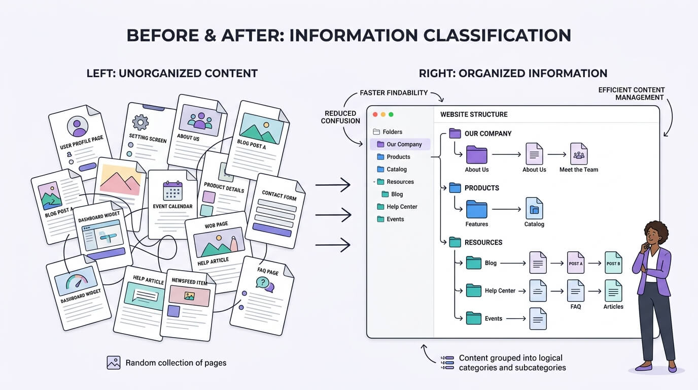
1. Gather Content:
Visit the NIT website and list down all the pages, articles, documents, and other content available on the site.
2. Document Content Items:
Create a spreadsheet or document to list all the content items from the NIT website.
Example Content Items:
Home
About Us
Vision and Mission
History
Administration
Academics
Undergraduate Programs
Postgraduate Programs
Diploma Programs
Admission Requirements
Application Process
Fees Structure
Scholarships
Research
News and Events
Student Resources
Student Portal
Library
Campus Facilities
Alumni
Contact Us
3. Classify Content:
Classify each content item into appropriate categories or topics based on its subject matter or purpose.
Example Classification:
About NIT:
About Us
Vision and Mission
History
Administration
Academics:
Undergraduate Programs
Postgraduate Programs
Diploma Programs
Admission Requirements
Application Process
Fees Structure
Scholarships
Resources:
Research
News and Events
Student Resources
Student Portal
Library
Campus Facilities
Community:
Alumni
Contact Us
4. Label Content Items:
Assign clear and descriptive labels to each content item to accurately represent its topic or purpose.
Example Labeling:
About Us
Vision and Mission
History
Administration
Undergraduate Programs
Postgraduate Programs
Diploma Programs
Admission Requirements
Application Process
Fees Structure
Scholarships
Research
News and Events
Student Portal
Library
Campus Facilities
Alumni
Contact Us
5. Document Metadata:
Document additional metadata for each content item, such as URL, author, publication date, and status (e.g., published, draft).
6. Review and Iterate:
Review the content inventory to ensure all content items are accurately documented and classified.
Seek feedback from stakeholders or team members and make any necessary adjustments.
Iterate on the content inventory as needed to refine classifications and labels.
Example Content Inventory for NIT Website:
Conclusion:
By following these steps and using actual content from the NIT website, you can create a comprehensive content inventory that catalogs and organizes all the content available on the site. This inventory serves as a valuable resource for understanding the website's content landscape and informing decisions related to classification and labeling for improved navigation and user experience.
EXERCISE (Classification and Labelling)
Conducting a labeling test:
This involves assessing the clarity and effectiveness of labels used on
a website. Here are detailed steps using actual content from nit.ac.ke
to demonstrate how to perform a labeling test in the context of
classification and labeling:
Steps for Conducting a Labeling Test:
1. Select Content Items:
Choose a set of content items or features from the Nairobi Institute of Technology (NIT) website that you want to test the labels for. These could include navigation menu items, page titles, or sections.
Example Content Items:
About Us
Academics
Research
News and Events
Student Resources
Alumni
Contact Us
2. Create Survey Questions:
Develop survey questions to assess participants' understanding and perceptions of the labels. Each question should focus on a specific label and ask participants to provide feedback.
Example Survey Questions:
What do you think the label "Academics" refers to on the NIT website?
How would you interpret the label "Student Resources"?
What content or features do you expect to find under the label "Research"?
3. Recruit Participants:
Invite participants to take part in the labeling test. Aim for a diverse group of users representative of the website's target audience.
Participant Recruitment Channels:
Email newsletters
Social media platforms
Online communities or forums
In-person recruitment (if applicable)
4. Administer the Survey:
Distribute the survey to participants and ask them to provide their responses to the survey questions.
Survey Administration Methods:
Online survey tools like Google Forms or SurveyMonkey
In-person interviews or focus groups (if applicable)
Remote usability testing platforms with survey capabilities
5. Analyze Responses:
Analyze the responses from participants to identify patterns and common themes regarding their understanding of the labels.
Key Analysis Points:
Clarity: Do participants understand what each label refers to?
Consistency: Are there consistent interpretations of the labels across participants?
Expectations: Do participants' expectations align with the actual content or features represented by the labels?
6. Iterate and Refine:
Based on the analysis of responses, refine the labels as needed to improve clarity and alignment with user expectations.
Label Refinement Strategies:
Adjust labels based on participants' feedback to better reflect the content or features they represent.
Test revised labels with additional participants to validate improvements.
Example Labeling Test Results:
Based on the survey responses, here are some findings and potential label refinements for the NIT website:
About Us: Participants generally understand this label and expect to find information about the institute's history, mission, and administration.
Potential refinement: Consider adding more specific labels within the "About Us" section, such as "History" and "Administration," to better guide users to relevant content.
Academics: There is some ambiguity regarding the scope of this label, with participants expecting to find information about academic programs, admission requirements, and fees.
Potential refinement: Clarify the label to specify that it encompasses information about academic programs, admission, and fees structure.
Research: Participants expect to find information about ongoing research activities and projects under this label.
Potential refinement: Ensure that the content under the "Research" section aligns with participants' expectations and clearly communicates the institute's research initiatives.
Conclusion:
By following these steps and using actual content from the NIT website, you can conduct a labeling test to assess the clarity and effectiveness of labels used for navigation and content organization. The insights gained from the test can inform label refinements to improve user understanding and navigation on the website.
EXERCISE (Navigation Design)
Wireframing a navigation menu involves creating a visual representation of the navigation structure for the Nairobi Institute of Technology (NIT) website. Here are detailed steps using actual content from nit.ac.ke to demonstrate how to wireframe a navigation menu in the context of navigation design:
Steps for Wireframing a Navigation Menu:
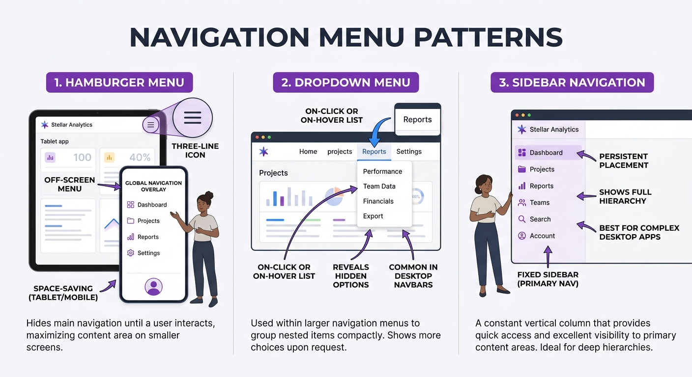
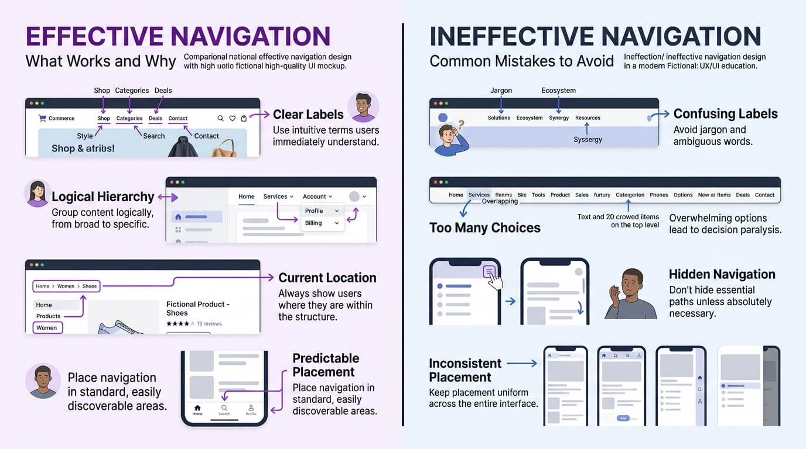
1. Understand Navigation Requirements:
Review the content and structure of the NIT website to understand the main sections, pages, and features that need to be included in the navigation menu.
Example Navigation Items:
Home
About Us
Academics
Research
News and Events
Student Resources
Alumni
Contact Us
2. Select Wireframing Tool:
Choose a wireframing tool to create the navigation menu wireframe. Common tools include Figma, Sketch, Adobe XD, or even pen and paper.
3. Create a New Wireframe:
Start a new project or document in your chosen wireframing tool.
4. Add Navigation Items:
Begin by adding the main navigation items to the wireframe, representing each as a labeled button or text link.
Example Wireframe Navigation Items:
[Home] [About Us] [Academics] [Research] [News and Events] [Student Resources] [Alumni] [Contact Us]
5. Organize Navigation Hierarchy:
Arrange the navigation items in a logical hierarchy based on their relationships and importance.
Example Navigation Hierarchy:
Home
About Us
Academics
Undergraduate Programs
Postgraduate Programs
Diploma Programs
Admission Requirements
Application Process
Fees Structure
Scholarships
Research
News and Events
Student Resources
Student Portal
Library
Campus Facilities
Alumni
Contact Us
6. Design Dropdown Menus (if applicable):
If the navigation menu includes dropdown menus for sub-navigation items, design these dropdowns to indicate their hierarchical relationship.
Example Wireframe Dropdown Menus:
Academics (Dropdown)
Undergraduate Programs
Postgraduate Programs
Diploma Programs
Admission Requirements
Application Process
Fees Structure
Scholarships
Student Resources (Dropdown)
Student Portal
Library
Campus Facilities
7. Include Visual Cues and Annotations:
Use visual cues such as arrows or indentation to indicate dropdown menus and hierarchical relationships.
Add annotations or notes to clarify any design decisions or functionality.
8. Review and Iterate:
Review the wireframe to ensure it accurately represents the navigation structure and meets the website's requirements.
Seek feedback from stakeholders or team members and make any necessary adjustments.
Iterate on the wireframe as needed to refine the design and improve usability.
Example Wireframe for NIT Website Navigation Menu:
Conclusion:
By following these steps and using actual content from the NIT website, you can create a wireframe for the navigation menu that accurately reflects the website's structure and requirements. The wireframe serves as a valuable visual guide for designing the navigation interface and ensuring intuitive navigation for users.
EXERCISE (Navigation Design)
Usability testing for navigation:
This involves assessing the effectiveness and efficiency of the
navigation system on the Nairobi Institute of Technology (NIT) website.
Here are detailed steps using actual content from nit.ac.ke to
demonstrate how to perform usability testing for navigation in the
context of navigation design:
Steps for Usability Testing for Navigation:
1. Define Testing Objectives:
Determine the specific objectives of the usability test, such as evaluating the clarity of labels, assessing the ease of finding information, or identifying navigation pain points.
2. Recruit Participants:
Recruit participants who represent the target audience of the NIT website. Aim for a diverse group of users in terms of age, background, and familiarity with the website.
3. Create Test Scenarios:
Develop a set of realistic scenarios or tasks that participants will attempt to complete using the website's navigation. These tasks should align with the testing objectives.
Example Test Scenarios:
Find information about undergraduate programs offered at NIT.
Locate the contact information for the admissions office.
Navigate to the latest news and events section of the website.
4. Conduct the Usability Test:
Administer the usability test to participants, either in-person or remotely using screen-sharing and video conferencing tools.
Steps to Conduct Usability Test:
Introduce the purpose of the test and provide instructions to participants.
Ask participants to attempt to complete each scenario using the website's navigation.
Encourage participants to think aloud as they navigate the site, verbalizing their thoughts, actions, and any difficulties encountered.
5. Observe and Document:
Observe participants as they interact with the website, noting any navigation issues, confusion, or successes.
Take detailed notes and capture observations, including participant comments, actions, and task completion times.
6. Collect Feedback:
Gather feedback from participants through post-test interviews or surveys. Ask participants about their overall navigation experience, specific challenges encountered, and suggestions for improvement.
7. Analyze Results:
Analyze the data collected during the usability test to identify patterns, common issues, and areas for improvement in the website's navigation.
Key Analysis Points:
Success rates: Measure the percentage of participants who successfully completed each task.
Task completion time: Assess how long it took participants to complete each task.
Errors and difficulties: Identify common navigation errors, confusion points, and usability issues encountered by participants.
8. Generate Insights and Recommendations:
Use the findings from the usability test to generate insights and recommendations for improving the website's navigation.
Example Insights and Recommendations:
Labels: Clarify ambiguous labels and ensure consistency across the navigation menu.
Organization: Reorganize navigation items to better reflect user mental models and priorities.
Dropdown Menus: Simplify dropdown menus and ensure they are accessible and intuitive to use.
Conclusion:
By following these steps and using actual content from the NIT website, you can conduct usability testing for navigation to evaluate the effectiveness and efficiency of the website's navigation system. The insights gained from the usability test can inform navigation design improvements to enhance the user experience and usability of the website.
EXERCISE (User Flows)
The steps of an e-commerce checkout process from the Nairobi Institute of Technology (NIT) website as an example: (we assume NIT website should have e-commerce features)
E-commerce Checkout Process for NIT Website:
1. Viewing Products:
User Flow:
User navigates to the "Academics" section on the NIT website.
Within the "Academics" section, the user selects "Undergraduate Programs" to view available programs.
2. Adding to Cart:
User Flow:
On the "Undergraduate Programs" page, the user selects a program they are interested in.
They click on a "Details" button to view more information about the program.
After reviewing the program details, the user clicks on an "Enroll Now" or "Add to Cart" button to add the program to their cart.
3. Reviewing Cart:
User Flow:
The user is directed to their shopping cart page, which lists the selected program(s) along with pricing information.
They have the option to adjust quantities, remove items, or continue shopping.
After reviewing their cart, the user proceeds to checkout.
4. Entering Shipping Information:
User Flow:
At checkout, the user is prompted to enter their shipping information, including name, address, and contact details.
They fill out the required fields and choose a shipping method (if applicable).
5. Selecting Payment Method:
User Flow:
After entering shipping information, the user selects their preferred payment method from available options (e.g., credit card, PayPal, bank transfer).
They provide payment details, such as credit card information or PayPal account credentials.
6. Reviewing Order Summary:
User Flow:
The user is presented with a summary of their order, including items purchased, shipping details, and total cost.
They have the opportunity to review and confirm the order details before proceeding to payment.
7. Completing Purchase:
User Flow:
Upon confirming the order details, the user clicks on a "Place Order" or "Complete Purchase" button to finalize the transaction.
The payment is processed, and the user receives a confirmation message or email with order details and receipt.
Conclusion:
By following these steps, you can demonstrate an e-commerce checkout process using actual content from the NIT website. This user flow helps illustrate the journey a user takes from viewing products to completing a purchase, highlighting key interactions and decision points along the way.
Suggested Websites for Learning and Practice
Nielsen Norman Group: Offers articles, reports, and courses on UX design, including information hierarchy, classification, and navigation design.
Interaction Design Foundation: Provides comprehensive courses and exercises on various UX topics.
UX Design Institute: Offers professional courses with practical exercises and projects.
Coursera: Offers courses from universities and colleges on information architecture and UX design.
Udemy: Features numerous courses on UX design with practical exercises.
Medium: Follow UX design publications like “UX Collective” and “UX Planet” for articles and case studies on organizing information and navigation design.
By engaging in these exercises and leveraging the suggested websites, you can build a solid foundation in organizing and structuring information, ensuring that your designs are user-friendly and effective.
EXERCISE (Website Mapping)
Wireframe a navigation menu:
Using actual content from the Nairobi Institute of Technology (NIT)
website www.nit.ac.ke:
Step 1: Identify the main sections of the website
Visit the NIT website and identify the main sections of the website. These are usually represented by the top-level navigation menu items. In this case, the main sections are:
About Us
Academics
Admissions
Research
Student Life
Alumni
Contact Us
Step 2: Determine the sub-sections for each main section
Click on each main section and identify the sub-sections. For example:
About Us:
History
Mission & Vision
Leadership
Campus Tour
Academics:
Schools
Departments
Programmes
Library
Admissions:
Undergraduate
Postgraduate
International Students
Application Forms
Step 3: Create a wireframe template
Open a wireframing tool like Figma, Sketch, or Adobe XD, and create a new project. Create a template with a header section that will contain the navigation menu.
Step 4: Add the main navigation menu items
Using the main sections identified in Step 1, add the navigation menu items to the header section of the wireframe template. Use a simple font and a reasonable font size (e.g., 16px).
Here's what the wireframe might look like at this stage:
Step 5: Add sub-navigation menu items
Using the sub-sections identified in Step 2, add sub-navigation menu items to each main navigation menu item. Use a slightly smaller font size (e.g., 14px) and indent the sub-menu items to create a visual hierarchy.
Here's what the wireframe might look like at this stage:
Step 6: Refine the wireframe
Refine the wireframe by adjusting the spacing, font sizes, and indentation to create a clear visual hierarchy. You can also add icons or other visual elements to enhance the navigation menu.
Here's a refined version of the wireframe:
Step 7: Test and iterate
Test the wireframe with real users to gather feedback and identify any usability issues. Iterate on the design based on the feedback to create a more user-friendly navigation menu.
That's it! By following these steps, you've created a wireframe for the navigation menu of the NIT website.
EXERCISE (Website Mapping)
Information Architecture Evaluation:
Using actual content from nit.ac.ke:
Step 1: Identify the main sections of the website
Visit the NIT website www.nit.ac.ke and identify the main sections of the website. These are usually represented by the top-level navigation menu items. In this case, the main sections are:
About Us
Academics
Admissions
Research
Student Life
Alumni
Contact Us
Step 2: Evaluate the disclosure principle
Evaluate how well the main sections of the website disclose the type of information that can be found within each section. Ask yourself:
Are the main section titles clear and concise?
Do the main section titles accurately reflect the content within each section?
Are there any redundant or overlapping sections?
For example, the "About Us" section could be improved by providing a brief description of what can be found within that section, such as "Learn about NIT's history, mission, and leadership".
Step 3: Evaluate the exemplars principle
Evaluate how well the website uses exemplars to describe the content categories. Ask yourself:
Are there examples of content within each section that illustrate what type of information can be found within that section?
Are the examples clear and concise?
Do the examples accurately reflect the content within each section?
For example, the "Academics" section could be improved by providing examples of academic programs or courses offered by NIT.
Step 4: Evaluate the front doors principle
Evaluate how well the website assumes that at least half of the website's visitors will come through some page other than the home page. Ask yourself:
Are there clear and consistent navigation paths throughout the website?
Are there multiple entry points to the website that allow users to access different sections directly?
Are there clear calls-to-action on each page to encourage users to explore other sections of the website?
For example, the "Admissions" section could be improved by providing a clear call-to-action on the home page to encourage users to apply online.
Step 5: Evaluate the multiple classification principle
Evaluate how well the website offers users several different classification schemes to browse the site's content. Ask yourself:
Are there multiple ways to browse the website's content, such as by category, alphabetically, or by date?
Are the classification schemes clear and consistent throughout the website?
Do the classification schemes accurately reflect the content within each section?
For example, the "Research" section could be improved by providing multiple ways to browse research projects, such as by category, researcher, or date.
Step 6: Evaluate the focused navigation principle
Evaluate how well the website's navigation scheme is focused and consistent throughout the website. Ask yourself:
Are the navigation menu items clear and concise?
Are the navigation menu items consistently labeled and organized throughout the website?
Are there any redundant or overlapping navigation menu items?
For example, the "Student Life" section could be improved by providing a clear and consistent navigation menu that allows users to easily access different aspects of student life, such as student organizations, campus events, and student services.
Step 7: Evaluate the growth principle
Evaluate how well the website is designed to accommodate growth and change. Ask yourself:
Is the website's information architecture flexible and adaptable to changes in content or functionality?
Are there clear and consistent patterns for adding new content or features to the website?
Are there any technical or design limitations that could hinder the website's ability to grow and change?
For example, the "Alumni" section could be improved by providing a clear and consistent pattern for adding new alumni profiles or news items.
By following these steps, you can evaluate the information architecture of the NIT website and identify areas for improvement to create a more user-friendly and intuitive website
EXERCISE (Wireframes)
Layout Design:
Steps for Layout Design Wireframing:
1. Gather Content:
Review the content and features of the NIT website homepage, including navigation links, featured sections, news or events, and any other relevant information.
2. Identify Key Sections:
Determine the main sections or components that should be included on the homepage based on user needs and organizational priorities.
Example Key Sections for NIT Homepage:
Header with logo and navigation menu
Hero section with a prominent image or video
About Us section
Academic Programs section
News and Events section
Footer with contact information and social media links
3. Sketch Wireframe Concepts:
Begin by sketching rough wireframe concepts on paper or using digital tools. Focus on layout structure and the placement of key sections.
Example Wireframe Sketch:
Header: [Logo] [Navigation Menu]
Hero Section: [Image/Video] [Headline] [Call-to-Action Button]
About Us Section: [Text Content] [Image/Icon]
Academic Programs Section: [List of Programs]
News and Events Section: [Latest News/Events]
4. Create Digital Wireframe:
Transfer the sketched wireframe concepts into a digital wireframing tool like Figma, Sketch, or Adobe XD.
5. Design Header and Navigation:
Start with designing the header section, including the NIT logo and navigation menu. Ensure the menu is intuitive and accessible.
6. Layout Hero Section:
Design the hero section with a visually appealing image or video, accompanied by a headline and a clear call-to-action button.
7. Organize Content Sections:
Arrange the remaining sections of the homepage wireframe, such as About Us, Academic Programs, and News and Events. Consider the flow of information and prioritize content based on user interests.
8. Add Visual Elements:
Incorporate visual elements such as images, icons, and graphics to enhance the wireframe's visual appeal and communicate key messages effectively.
9. Review and Iterate:
Review the wireframe to ensure it accurately represents the layout design of the NIT homepage. Seek feedback from stakeholders or team members and make any necessary adjustments.
Example Wireframe for NIT Homepage Layout:
EXERCISE (Wireframes)
Functionality design, incorporating actual content from nit.ac.ke
Detailed Steps for Functionality Design
Step 1: Gathering Content
Visit nit.ac.ke and gather all relevant content such as headers, sub-headers, text, images, and links.
Step 2: Header Section
Top Bar:
Content: Contact Information and Social Media Links.
Example from NIT:
Phone: +254-020-2208374
Email: info@nit.ac.ke
Social Media: Icons for Facebook, Twitter, LinkedIn
Wireframe Design:
Navigation Bar:
Content: Logo and Navigation Links.
Example Links from NIT: Home, About Us, Programs, Admissions, Research, News & Events, Contact Us.
Wireframe Design:
Step 3: Hero Section
Background Image:
Content: Use a high-quality campus image from the website.
Welcome Text:
Example from NIT:
"Welcome to Nairobi Institute of Technology"
Tagline: “Empowering through Education”
Call-to-Action Buttons:
Example Buttons: Learn More, Apply Now.
Wireframe Design:
Step 4: Programs Overview
Section Title:
Content: "Our Programs"
Icons & Descriptions:
Example Programs from NIT: IT, Engineering, Business.
Description Snippets:
IT: "Explore our Information Technology programs."
Engineering: "Offering hands-on engineering courses."
Business: "Learn business management skills."
Wireframe Design:
Step 5: Why Choose NIT
Section Title:
Content: "Why Choose Us"
Bullet Points/Icons:
Example Points:
Experienced Faculty
Modern Facilities
Career Services
Wireframe Design:
Step 6: News & Events
Section Title:
Content: "Latest News & Events"
News Carousel/Grid:
Example News Items:
News 1: "NIT partners with industry leaders."
Event 1: "Upcoming Open Day - Register Now."
Wireframe Design:
Step 7: Testimonials
Section Title:
Content: "What Our Students Say"
Carousel/Grid:
Example Testimonials:
Testimonial 1: "NIT provided me with the skills I needed."
Testimonial 2: "Excellent faculty and facilities."
Wireframe Design:
Step 8: Research Highlights
Section Title:
Content: "Research @ NIT"
Brief Descriptions:
Example Projects:
Project 1: "Innovations in renewable energy."
Project 2: "Advancing AI technologies."
Wireframe Design:
Step 9: Footer Section
Quick Links:
Content: Home, About Us, Programs, Admissions, Contact Us.
Contact Information:
Address: P.O. Box 12345, Nairobi, Kenya
Phone: +254-020-2208374
Email: info@nit.ac.ke
Newsletter Signup:
Content: Email field, "Subscribe" button.
Social Media Links:
Icons linking to profiles.
Copyright Notice:
Content: "© 2023 Nairobi Institute of Technology."
Wireframe Design:
Key Terms
| Term | Simple meaning |
|---|---|
| Information architecture | Organising and structuring content so it's easy to find |
| Sitemap | A hierarchical map of all pages or screens in a product |
| User flow | The path a user takes to complete a task |
| Card sorting | A method for discovering how users naturally group content |
| Usability | How easily users can accomplish tasks |
| Accessibility | Designing so people with different abilities can use a product |
The information hierarchy, sitemap, user flow and wireframe diagrams for this unit now appear inline, right next to the sections that introduce them, above.
Mistake: A sitemap and a user flow are the same thing.
Correct: A sitemap shows all pages and their structure; a user flow shows one specific path a user takes through those pages.
Mistake: More navigation options are always better.
Correct: Too many choices increase cognitive load — a clear hierarchy beats an exhaustive menu.
If given a scenario and asked to “design the IA,” start by listing the content, then group it (card-sorting logic), then draw the hierarchy — examiners look for that reasoning process, not just a final diagram.
- Choose a real website (e.g. your school's site).
- List every major page or section you can find.
- Group them logically and draw a sitemap.
- Pick one common task (e.g. “find admission requirements”) and map the user flow.
- Sketch a low-fidelity wireframe for the page where that task is completed.
Typography, colour theory, layout and grid systems, branding and visual identity.
How visual hierarchy guides the eye through a screen.
Applying consistent type scales, restrained colour palettes and grids.
Contrast and consistency do more work than decoration.
DAD 6208.5 Visual Design for UI
Competence
By the end of this unit, you should have the ability to apply design principles to create visually engaging and user-friendly interfaces.
Introduction
Visual design for User Interfaces (UI) is a subset of user experience design that focuses on the aesthetics of a product's interface and its related materials by strategically implementing images, colors, fonts, and other elements. Its goal is to improve a product's visual appeal and usability, creating a cohesive and visually pleasing experience for users.
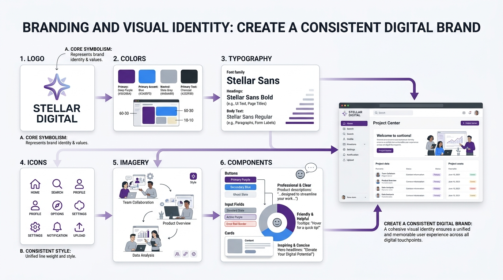
Fundamentals of visual design for web
The fundamentals of visual design for the web encompass several key elements that work together to create a visually appealing, user-friendly, and effective web interface. Here's an overview of these fundamentals:
i. Typography
Typography involves the strategic selection and arrangement of type to make written language legible, readable, and visually appealing when displayed. It's a crucial element of visual design for the web as it directly affects user experience and the communication of information.
Font Selection: Choosing fonts that are readable on various devices and screen sizes. Web-safe fonts or web fonts like Google Fonts are commonly used.
Features to consider include:
Typefaces and fonts
A typeface is a set of distinct glyphs(symbols) that characterize a particular style of lettering. Fonts are variations within a typeface, like italic or bold
Weights and styles
Weight is the overall thickness of a typeface's stroke in any given font. The most common weights are regular and bold, but weights can cover extremes from the very light to the very heavy.
A font style refers to the specific design and appearance of characters in a typeface. It encompasses various attributes, such as the shape, weight, spacing, and decorative elements of the letters.
Size
Font size refers to the measurement of the height of characters in a typeface, typically expressed in points (pt) or pixels (px). Font size determines the visual prominence and legibility of text in a design, with larger sizes used for headlines and smaller sizes for body text.
NB: Resolution of a display screen for digital products affects the size of text.
Line spacing
Line spacing is the distance between lines of text. This determines readability text.
Line height
Line height is the vertical distance between two lines of type, measured from the baseline of one line of type to the baseline of the next.
Contrast
Contrast refers to the difference in visual properties between elements in a user interface. In design, contrast is one of the key factors influencing the scannability and visual hierarchy of a web page or a mobile screen. It enables the designer to present the layout in a way that informs users which points of interaction are vital and which are secondary.
It can refer to differences in color, size, or spacing, and is used to create visual hierarchy and emphasis, making it easier for users to understand and interact with the interface.
Scale
Pre-defined set of font sizes that dictate font sizes within a digital product. This may involve font sizing, which uses a range of type sizes related to each other growing by same ratio.
Color
The coloring of text affecting numerous factors that are vital for the compelling visual perception.
Hierarchy: Establishing a clear hierarchy using different font sizes, weights, and styles to differentiate headings, subheadings, body text, and other elements.
Readability: Ensuring text is easy to read by considering factors like font size, line height, letter spacing, and contrast against the background.
Consistency: Maintaining consistency in typography across the website to create a cohesive look. This includes using a limited number of fonts and styles.
Accessibility: Making text accessible to all users, including those with visual impairments, by ensuring sufficient contrast and considering dyslexia-friendly fonts.
ii. Colour Theory
Colour theory involves the use of colour to create aesthetically pleasing and effective designs. It plays a significant role in visual appeal, brand identity, and user experience.
Colour Schemes: Utilizing color schemes (monochromatic, analogous, complementary, etc.) to create harmony and balance in the design.
Contrast: Ensuring sufficient contrast between text and background for readability and accessibility. Tools like contrast checkers can be helpful.
Consistency: Using a consistent color palette to strengthen brand identity and provide a cohesive user experience.
Emotional Impact: Understanding the psychological effects of colors and using them to evoke the desired emotions and reactions from users.
Accents: Using accent colors to draw attention to important elements such as buttons, links, and calls to action.
iii. Layout and Composition ************
Layout and composition refer to the arrangement and organization of visual elements within a design. It involves the deliberate placement, sizing, and alignment of elements such as text, images, and graphics to create a harmonious and visually appealing composition. Layout and composition play a crucial role in guiding the viewer's eye, establishing hierarchy, and conveying information effectively.
Layout and Composition Techniques:
Balance: Achieving visual balance by distributing elements evenly across the page. This can be symmetrical or asymmetrical.
Alignment: Aligning elements to create a clean, ordered appearance. This can be achieved through the use of grids and guides.
Proximity: Grouping related items together to create logical associations and improve navigation.
Whitespace: Using whitespace (or negative space) to prevent clutter and give content room to breathe, improving readability and focus.
Visual Hierarchy: Establishing a clear visual hierarchy to guide users' attention to the most important elements first.
iv. Grid Systems
Grid systems are frameworks that help designers structure and organize content on a web page. They provide consistency and alignment, making designs more orderly and visually appealing.
Structure: Using a grid system to divide the page into columns and rows, creating a structured and balanced layout.
Consistency: Ensuring consistent alignment and spacing of elements across different pages of the website.
Flexibility: Using flexible grid systems like CSS Grid or Bootstrap that adapt to different screen sizes and devices, ensuring a responsive design.
Alignment: Aligning text, images, and other elements to the grid lines to create a cohesive and organized look.
Modular Design: Designing with modular components that fit within the grid system, making it easier to maintain and update the design.
Integrating the Fundamentals
When designing for the web, these fundamentals should be integrated seamlessly to create a cohesive and effective user experience. Here are some tips for integration:
Create Style Guides: Develop comprehensive style guides that include typography, color palettes, layout principles, and grid specifications to ensure consistency.
Use Design Tools: Utilize design tools like Adobe XD, Sketch, Figma, and others to prototype and iterate on designs.
Conduct Usability Testing: Test designs with real users to gather feedback and make data-driven improvements.
Stay Updated: Keep up with the latest trends and best practices in web design to ensure your designs are modern and effective.
ii. Color
UI components
DAD 6208.6 Prototyping and Interaction Design
Prototyping and interaction design help you test how users will interact with a product before full development.
Simulate user interactions
Diagrams for this topic are below. Full written notes for this subsection were lost in an earlier file cut — use the figures and the unit overview while studying.
Interactive elements
Diagrams for this topic are below. Full written notes for this subsection were lost in an earlier file cut — use the figures and the unit overview while studying.
Interactive prototypes
Diagrams for this topic are below. Full written notes for this subsection were lost in an earlier file cut — use the figures and the unit overview while studying.
Micro-interactions and animations
Diagrams for this topic are below. Full written notes for this subsection were lost in an earlier file cut — use the figures and the unit overview while studying.
Motion design
Diagrams for this topic are below. Full written notes for this subsection were lost in an earlier file cut — use the figures and the unit overview while studying.
DAD 6208.7 User Testing and Iteration
User testing validates designs with real people; iteration improves the product from what you learn.
Usability tests
Diagrams for this topic are below. Full written notes for this subsection were lost in an earlier file cut — use the figures and the unit overview while studying.
Iterating designs
Diagrams for this topic are below. Full written notes for this subsection were lost in an earlier file cut — use the figures and the unit overview while studying.
User-Centered Design (UCD) Principles
Diagrams for this topic are below. Full written notes for this subsection were lost in an earlier file cut — use the figures and the unit overview while studying.
Designing for Different Platforms and Responsive Design
Design must adapt across mobile, tablet, desktop, and accessibility needs.
Considerations for mobile, web platforms
Diagrams for this topic are below. Full written notes for this subsection were lost in an earlier file cut — use the figures and the unit overview while studying.
Responsive and adaptive design techniques
Diagrams for this topic are below. Full written notes for this subsection were lost in an earlier file cut — use the figures and the unit overview while studying.
Designing for accessibility and inclusivity
Diagrams for this topic are below. Full written notes for this subsection were lost in an earlier file cut — use the figures and the unit overview while studying.
Inclusive design
Diagrams for this topic are below. Full written notes for this subsection were lost in an earlier file cut — use the figures and the unit overview while studying.
Web Content Accessibility Guidelines (WCAG).
Diagrams for this topic are below. Full written notes for this subsection were lost in an earlier file cut — use the figures and the unit overview while studying.
Additional platform notes
See Unit 8 for responsive, mobile, and accessibility diagrams.
Emerging trends and issues in UI/UX Design
Emerging interfaces include conversational, voice, multimodal, AR/VR, and wearable experiences.
Trends and emerging practices in UI/UX design
Diagrams for this topic are below. Full written notes for this subsection were lost in an earlier file cut — use the figures and the unit overview while studying.
Professional portfolio showcasing UI/UX design
Diagrams for this topic are below. Full written notes for this subsection were lost in an earlier file cut — use the figures and the unit overview while studying.
Master Project
Use these examples while preparing your case study and portfolio narrative.
Exam Revision
Open earlier units for detailed notes. Use the sidebar search for terms like wireframe, persona, WCAG, and usability.